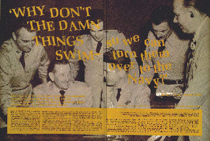
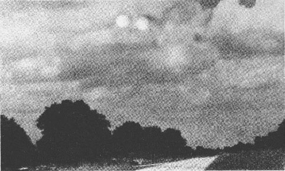
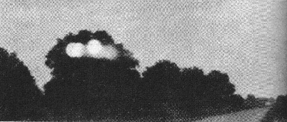
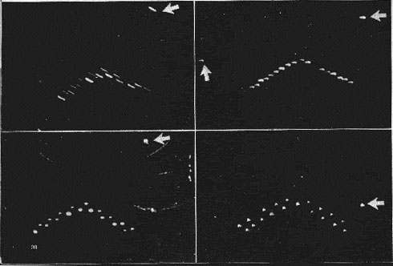
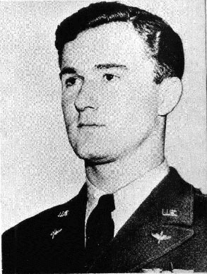
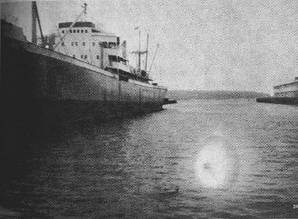
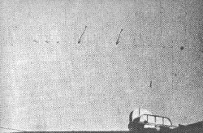
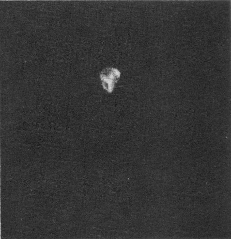
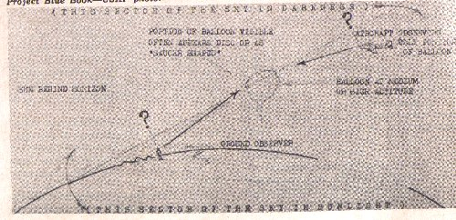
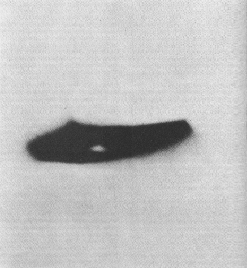

En .

C'est ainsi qu'un enquêteur de l'Air force a résumé son exaspération en essayant de filtrer les faits ovnis de
la fantaisie. De , l'auteur a dirigé le Projet Blue Book, l'enquête officielle aujourd'hui fameuse sur les ovnis. Voici
ce qu'il a appris.
Le , une femme du Corps des Observateurs au Sol dans les Collines Noires du Dakota du sud voit
une lumière stationnaire dans le ciel à Est de sa position. 2 opérateurs d'une station radar sortirent vérifier la
chose tandis que la femme était toujours au téléphone. Alors qu'ils scrutaient le ciel, la femme signala, La chose
commence à se déplacer au-dessus de Rapid City.
Au même moment, les 2 hommes du radar virent la lumière
commencer à bouger. Ils retournèrent à leur radar pour la repérer, et la femme signala que l'objet revenait en arrière
à sa position d'origine. Le radar l'accrocha à cet endroit.
Un F-84, en l'air à ce moment, fut dirigé sur la cible. Le pilote du jet observa la lumière visuellement et partit après elle. L'objet se dirigeait vers le Nord avec le jet après lui, et les opérateurs radar observèrent la chasse sur leur écran. L'Objet Volant Non Identifié resta devant le jet et sembla accélérer chaque fois que le pilote accélérait avec le jet. Après avoir chassé l'objet sur 120 miles, le pilote fut à court de carburant et reçu la permission de revenir. Lorsque le jet fit demi-tour, l'ovni vira également et le suivi sur le retour.
Après que le jet ait atterri, un 2nd F-84 partit pour investiguer. Il fut orienté vers la position et repéra la chose visuellement au-dessus de lui. Il monta jusqu'à 20000 pieds, signala qu'il était au niveau de la lumière, et l'objet décolla à nouveau vers le nord avec le jet à sa poursuite. A nouveau la chasse fut observée sur le radar au sol, l'ovni et le jet étant pleinement visibles sur l'écran.
Dans la 2nde poursuite, le pilote fit un certain nombre de tests pour exclure certains phénomènes courants ayant été pris à tort pour des "soucoupes volantes". Il éteignit toutes les lumières de ses instruments et fit faire des embardées à l'avion pour être certain qu'il ne prenait pas en chasse une réflexion de la canopée. Il ne le faisait pas. Il observa l'objet avec attention par rapport aux étoiles, et jura qu'il se déplaçait parmi elles, éliminant ainsi la possibilité qu'il pourchassait une planète ou une étoile. Finalement, lorsqu'il pensa se rapprocher de l'objet, il alluma ses visées de tir radar. Ce type de jet possède une lumière sur le panneau des instruments qui s'allume pour indiquer un "verrouillage" avec la cible par les visées radar. La lumière s'alluma.
Le 2nd jet prit la lumière en chasse à 160 miles au nord avant d'abandonner la poursuite. A ce moment l'ovni continuait à voler vers le nord. Le Centre de Filtrage du Corps d'Observateurs au Sol devant fut alerté, et les observateurs qui s'y trouvaient signalèrent une lumière fonçant vers le nord.
Ce fut de fait un cas étonnant. Il y avait des observations visuelles simultanées depuis 2 sites au sol reliés par téléphone, des observations simultanées au sol et au radar, des observations simultanées sol-radar et jet-visuelle, une poursuite dans laquelle l'ovni sema le jet, une inversion de trajectoire, une 2nde observation jet-visuelle confirmée par le radar au sol, un "verrouillage" radar en l'air et finalement une observations depuis le sol à des centaines de miles de distance.
Qu'était cet objet ? Pendant 2 ans, de , j'ai parcouru en vol 200 000 miles, conféré avec des douzaines des meilleurs scientifiques américains et une collection exotique d'excentriques exaltés, pataugé dans les mangroves marécageuses de Floride, me suis tiré moi-même du lit à 3 h du matin pour répondre à des appels téléphoniques transatlantiques, examiné des dizaines de photographies étranges et regardé un film court amateur 97 fois dans un effort pour répondre à cela et des questions similaires.
Mes collègues et moi furent fustigés par des collègues américains pour avoir dissimulé la plus grande nouvelle dans l'histoire de l'homme moderne, et par Radio Moscou pour préparer le terrain de la guerre atomique.
Je fus qualifié de dupe ignorant, un Charlie McCarthy manipulé par des forces puissantes au Pentagone. Je fus consulté par la Maison Blanche, et j'ai briefé la plus haute figure de l'Air Force, qui écoutait respectueusement et me laissa faire tout l'exposé.
Pendant 2 ans, avec l'aide des meilleurs cerveaux du pays, nous avons travaillé sur un puzzle géant d'un mystère qui était soit sans aucune signification, soit ferait basculer le monde.
Pour chaque morceau que nous remettions en place, nous trouvions que 2 autres avaient été ajoutés à la pile du puzzle.
Je me suis finalement retrouvé à inspecter sobrement un morceau de fumier de vache pour apprendre s'il était venu de l'espace.
Ils m'ont fichu une peur bleue, déclara-t-il à l'Air Force [Projet Blue Book - USAF]


De , j'étais en charge de l'enquête officielle de l'Air Force sur les Objets Volants Non Identifiés, les choses qui filent à travers l'espace sous le nom populaire de "soucoupes volantes".
L'Ere de la Soucoupe Volante en était à l'An 5 lorsqu'elle m'arracha à mon travail d'analyste en renseignement technique pour le Centre de Renseignement Technique de l'Air à Wright Field, Dayton (Ohio).
L'an 1 s'ouvrit , lorsqu'un homme d'affaires de Boise nommé Kenneth Arnold signala avoir vu une chaîne de 9 choses semblables à
des soucoupes
scintillant dans le soleil alors qu'elles volaient à 1200 miles/h - 2 fois la vitesse du son - près du
Mont Rainier. Son histoire captiva l'imagination de la nation avec un fait déroutant. Aucun appareil connu dans le monde n'avait brisé le mur
du son à cette époque. Je ne le crois pas,
dit Arnold, mais je l'ai vu
.
S'il n'y avait eu que l'histoire d'Arnold, l'ère de la Soucoupe Volante se serait ouverte et refermée en 1 jour. Mais les
30 jours qui suivirent il y eut 53 signalements de soucoupes de plus. Près de Portland
(Oregon), un couple de shérifs adjoints en signala 20 dans une ligne filant à toute allure vers l'ouest
. Une mère
au foyer de Chicago en vit un avec des jambes
et courut dans la maison et claqua la porte. Un prospecteur dans
les montagnes Cascade repéré 5 ou 6 d'entre eux avec des queues
et fut effaré de voir son compas magnétique tourner
violemment
. A Spokane, une femme signala 5 d'entre eux de la taille d'une maison de 5 pièces
. Les siens
avaient la forme de baquets
. Un homme particulièrement serein à Seattle prit la parole et rapporta, Pourquoi
passent-ils tout le temps à travers notre jardin.
A l'époque, j'étais dehors au Parc National de Yellowstone, en vacances du Collège de l'Etat d'Iowa, où j'étudiais l'ingénierie aéronautique. C'était ma 2e tentative pour un diplôme. J'avais laissé tomber la 1ʳᵉ fois, en , pour m'engager dans l'Air Force. J'avais été affecté comme bombardier dans le 1er escadron de B-29 organisé, survolé la « Bosse » (l'Himalaya) depuis l'Inde, puis nous partîmes pour Tinian pour les gros raids contre le Japon. Notre groupe vola la dernière mission de la guerre, un raid contre Tokuyama, quelques minutes avant la fin de la guerre.
Quelques jours après l'observation de Arnold, des jeunes jetaient
des assiettes en papier en l'air au-dessus de notre loge à Yellowstone et criaient, Soucoupe, soucoupe !
Certains touristes commençaient à voir des choses et venir et en parler, comme si leurs vacances étaient terminées. Je
lu l'histoire d'Arnold et la jettais au loin. 2 fois au-dessus du
Japon j'avais vu des objets étranges dans le ciel. 1 était une lumière jaune-orangé qui suivit notre B-29 pendant un
moment et qui s'éteignit soudain. Le consensus était qu'il s'agissait d'un "foo fighter"-la lumière étrange repérée des douzaines de
fois par des aviateurs au-dessus de l'Europe et du Japon. La théorie était que c'était un phénomène électro-statique.
Une autre fois, en volant sur le chemin du retour avec les nerfs à vif après une mission difficile, je lâchai une rafale de 6
armes de calibres 0,50 sur un objet brillant juste vers l'aube. Après avoir mis l'équipage en émoi, je réalisais
soudain que je tirais sur la planète Vénus.
Parmi les observations qui suivaient Arnold, cependant, il y en
avait qui avaient plus l'air d'une hystérie. Elles venaient de pilotes accoutumés aux tours qu'un vol peut jouer sur
les yeux, de scientifiques, parmi d'autres observateurs a priori sobres et non excités. Un météorologue en charge de
la station du bureau météo U.S. de Louisville (Kentucky), signala une lumière orange "roulant" à travers le ciel
nocturne. Au terrain d'aviation de Muroc, en Californie, le site
d'essais d'un avion expérimental secret du gouvernement, le lieutenant Joseph McHenry repéra 2 objets argentés de
forme sphérique ou semblable à un disque.
Il appela 3 autres personnes de la base qui virent les mêmes choses. 3
autres témoins rejoignirent le groupe, et 5 des 7 virent un 3ème objet. Aucun appareil expérimental n'était dans les airs. Les
objets se déplaçaient contre le vent et par conséquent n'étaient pas des ballons. Quelques heures plus tard, un major et un
colonel de Muroc firent des observations séparées d'un objet fin
métallique
qui folâtra au-dessus du terrain pendant 8 mn.
L'Air Force, appris-je plus tard, hésita entre 2 écoles de pensée concernant cette première éruption d'observations. Certains responsables d'assez haut rang étaient préoccupés à leur sujet. Les U.S. avaient vu la complaisance mener à un Pearl Harbor, et la tension internationale commençait à se durcir sous le climat de la "guerre froide." Ces responsables pensaient que nous devrions trouver - et rapidement - ce qui causait l'épidémie des histoires de soucoupes.
Opposés étaient ceux qui affirmaient que l'histoire d'Arnold avait déclenché une hystérie de masse. Ils pensaient que la publicité accordée aux premières observations avait amené des millions de gens à scruter le ciel pour "voir une soucoupe," et qu'ils s'illusionnaient eux-mêmes avec toutes sortes de choses - un papier pris dans le vent, des oiseaux, des reflets d'avions. Ce groupe raisonnait que les observations allaient diminuer avec le cours normal des événements.
Les sceptiques étaient confortés par la découverte que le récit d'Arnold avait des manques. Ses estimations de la taille des objets et de leur distance de son avion ne concordaient pas. Il les rapporta être entre 20 et 25 miles de distance et de 45 à 50 pieds de long. Lorsque son observation fut analysée, on découvrit que des objets de cette taille ne pouvaient être discernés à l'œil nu depuis cette distance. Si son estimation de taille était correcte, les objets n'étaient éloignés que de 6 ou 7 miles - et volaient à 400 miles/h environ, des valeurs tout à fait dans l'intervalle d'un appareil conventionnel.
Le scepticisme initial fut renforcé lorsqu'aucun des objets ne manifesta de menace, n'atterrit ni ne s'écrasa en un lieu où un examen aurait pu établir qu'il s'agissait bien de quelque chose de nouveau sous le soleil.
La première dispute sur la prise en charge des histoires d'Objets Volants Non Identifiés fut résolue par les ovnis eux-mêmes. Ils persistaient, mois après mois, avec un noyau dur d'incidents qui venaient d'observateurs chevronnés et défiaient l'analyse. L'Air Force décida de centraliser l'investigation et élabora un corps de données qui pouvait être analysé.
Ils mirent en place le Projet Sign et se lancèrent sérieusement à la poursuite des soucoupes. Par la suite le nom de code fut changé pour "Grudge." Nous le changeâmes plus tard en "Blue Book" lorsque quelqu'un au Pentagone suggéra que "Grudge" (« rancune ») donnait l'impression que le projet abordait le travail à contrecœur. Le code "Blue Book" fut pris des livres bleus de college traditionnels qui avaient toutes les réponses aux questions des examens. Cela ne se révéla pas un choix particulièrement judicieux.
Les observations continuaient d'arriver à une moyenne de 1 tous les 3 jours. La controverse à leur sujet augmenta et la confusion se multiplia. Des articles commençaient à surgir dans les magazines nationaux, et les commentateurs radio diffusaient périodiquement « l'histoire secrète des soucoupes », chaque récit contredisant l'autre. C'étaient des armes secrètes américaines, de nouveaux engins russes, des émissaires d'une autre planète venus en reconnaissance sur la Terre.
En , l'Air Force soumit les 375 observations alors en main à une ré-évaluation intensive, et émis un rapport épais sur ses conclusions. Le Dr. J. Allen Hynek, alors directeur du département d'astronomie à l'Université de l'Etat d'Ohio, passa les rapports au crible pour y chercher des choses de nature astronomique, comme des étoiles, planètes, météores. Le Service Météo Aérien de l'Air Force les vérifia pour les ballons. La Rand Corporation (un groupe de recherche de haut niveau qui n'a rien à voir avec la firme de machines de bureau), le Laboratoire de Géophysique de l'Air Force, le Bureau Météo des U.S., et le Dr. F. M. Fitts, un psychologue du Laboratoire Aéro-médical de l'Air Force, firent quelques évaluations générales depuis leurs points de vue spécialisés.
La Rand Corporation commenta : Nous n'avons rien trouvé qui contredirait
sérieusement des explications rationnelles simples des phénomènes divers en termes de ballons, appareils conventionnels, planètes, météores, morceaux de papier, illusions
d'optique, farceurs, déclarants psychopathologiques et autres.
Dr. Hynek: En considérant les éléments des observateurs et des
enquêteurs comme corrects, il est conclu que 32 % peuvent être expliqués astronomiquement, 35 % peuvent être
attribués à des oiseaux, fusées, avions, etc. et que 33 % ont manqué d'éléments ou pour lesquelles une explication
adaptée n'était pas apparente.
Le Service de la Météo Aérienne de l'USAF se cantonna à son domaine, commenta que 12 % étaient apparemment des ballons.
Sur les 375 rapports, 13 % n'avaient pas des solutions facilement explicables. Le Dr. Fitts avança une théorie : Il
y a suffisamment d'explications psychologiques aux signalements d'Objets Volants Non Identifiés pour fournir des
explications plausibles aux rapports qui ne sont pas explicables autrement. Ces erreurs dans l'identification de
stimuli réels résultent principalement de l'incapacité à estimer les vitesse, distance et taille.
Ces analyses étaient étayées par de volumineux articles considérant les données de façon soigneusement raisonnée et nuancée. La presse, toujours avide d'une réponse qui tiendrait en 2 lignes d'un titre qui compterait 12 lettres par ligne, condensa l'ensemble du rapport en un classement sans suite par l'Air Force. Les ovnis ignoraient la Rand Corp., le Dr. Hynek, la presse, et al, et continuaient à voler. En exactement le même nombre atterrirent dans les dossiers du projet - 152 - qu'il n'y en avait eu .
Alors , ils commencèrent à diminuer.
Dans le même temps j'avais terminé mon travail au college de Ames et venais de rouler mon nouveau diplôme juste à temps pour être rappelé en service à l'Air Force à cause de la Corée. Ils me basèrent à Dayton, où durant les 7 premiers mois je travaillais sur des appareils conventionnels que vous pouvez voir, sentir et mesurer.
La fonction principale du Centre de Renseignement Technique de l'Air n'est pas, comme certaines personnes le pensent, d'analyser le mystère des ovnis. Il est chargé de la prévention de la surprise technologique par un pays étranger. Il étudie l'ensemble des données qu'il peut obtenir sur un appareil ennemi, des missiles guidés, et les avancées technologiques sur tout ce qui vole. Il obtint le projet soucoupe parce qu'une chose sur laquelle tous les observateurs s'accordaient était - les choses volent.
Cela amena un jour un enquêteur harassé de Blue Book
à se plaindre : Pourquoi diable ces damnées choses ne nagent pas qu'on puisse les retourner à la Marine ?
A l'été , Grudge était réduit à un seul homme, les observations diminuaient, et c'était comme si le projet allait être classé par manque de travail. En juin, pour le 1er mois en 4 ans, pas une seule observation n'arriva. En août l'enquêteur solitaire fut transféré, et le projet fut confié à un ami à moi, le lieutenant Jerry Cummings. J'avais l'habitude de débarquer et de le titiller sur l'état médiocre du boulot des soucoupes.
Tu vas ne plus avoir de travail, garçon,
lui dis-je.
Tu as raison,
me dit-il, mais pour la mauvaise raison. Ma démobilisation arrive bientôt.
A 15 h le 13 septembre , le projet revint soudain à la vie. Le téléscripteur de l'ATIC commença à crépiter un message long d'un mètre venu du nord du New Jersey. Lorsqu'il s'arrêta, on aurait dit que c'était comme si le Garden State avait été envahi par quelque chose sorti de H. G. Wells.
Cela avait commencé 2 jours auparavant, le 10 septembre à 11 h 00, lorsqu'un opérateur stagiaire faisait une démonstration à un groupe de gradés en visite à une école radar du New Jersey. Il avait été choisi parce qu'il était le meilleur homme de sa classe. Il fit la démonstration du dispositif en opération manuelle pendant un moment, repérant le traffic aérien local. Alors il annonça qu'il allait faire la démonstration du repérage automatique, dans lequel le dispositif est placé sur une cible et la suit sans aide de l'opérateur. Le dispositif pouvait suivre des objets volant à des vitesses de jet.
L'opérateur repéra un objet à environ 12000 yards au sud-est de la station, volant bas vers le nord. Il essaya d'enclencher le mode automatique. Il n'y parvint pas, essaya à nouveau, et échoua à nouveau. Il se retourna vers son auditoire de VIP embarrassé.
Il va trop vite pour le dispositif,
dit-il. Cela veut dire qu'il va plus vite qu'un jet !
Un lot de sourcils très importants se soulevèrent. Qu'est-ce qui vole plus vite qu'un jet ?
L'objet resta à portée pendant 3 minutes et l'opérateur continua d'essayer, sans succès, d'obtenir un suivi automatique. Il sortit finalement de l'écran, laissant un opérateur rouge de confusion parlant tout seul.
25 minutes plus tard, le pilote d'un jet d'entraînement, transportant un major de l'Air Force comme passager et volant à 20000 pieds au-dessus de Point Pleasant (New Jersey), repéra loin en dessous de lui un objet discoïde d'un argent terne. Il le décrivit comme faisant 30 à 50 pieds de diamètre et descendant vers Sandy Hook depuis une altitude d'un mile environ. Il vira sur l'aile et se mit à descendre à sa poursuite. Alors qu'il piquait, rapporta-t-il, l'objet stoppa sa descente, resta en vol stationnaire, puis fila vers le sud, fit un virage de 120 degrés et disparut vers le large
L'énigme du Jersey revint alors au groupe radar. A 15 h 15 ils reçurent un appel fébrile du quartier général leur demandant
d'accrocher une cible haute et au nord - là où le premier objet plus rapide qu'un jet
avait disparu - et de
l'accrocher en vitesse. Ils l'accrochèrent et rapportèrent qu'elle se déplaçait lentement à 93000 pieds. Ils pouvaient
aussi la voir visuellement comme un point argenté.
Qu'est-ce qui vole à 18 miles au-dessus de la Terre ?
Le lendemain matin 2 radars accrochèrent une autre cible qui ne pouvait être suivie automatiquement. Elle montait, se stabilisait, remontait, partait en piqué. Lorsqu'elle montait, elle allait presque à la verticale.
La sensation de 2 jours prit fin cet après-midi-là lorsqu'un objet non identifié en vol stationnaire fut accroché pendant plusieurs minutes.
Une copie du long rapport du New Jersey partit pour Washington, et peu après Dayton reçut l'instruction de s'y rendre, d'enquêter et de faire rapport au Pentagone. En quelques heures, le lieutenant Cummings et un lieutenant-colonel de l'ATIC partaient en avion voir ce qui se passait.
2 jours plus tard ils étaient de retour avec des rames de données brutes. Avant que Cummings puisse commencer à trier le puzzle, il fut démobilisé.
Jusque-là, j'avais fait le travail qui m'était assigné et prêté peu d'attention aux soucoupes volantes. Mais l'épidémie du New Jersey me fascinait. Quoi qu'il se soit passé là-bas, c'était clairement bien plus que l'histoire de "soucoupe" occasionnelle que j'avais lue dans les journaux, où un fermier du Dakota voyait quelque chose filer au-dessus de sa grange, ou une ménagère voyait 6 disques vaciller dans le ciel en étendant son linge. Ma curiosité l'emporta sur la règle ancestrale que les hommes en uniforme suivent depuis l'époque d'Hannibal. Je me portai volontaire.
Je me dis que je résoudrais l'énigme du Jersey puis retournerais à mon travail habituel. Il s'avéra que je ne fis ni l'un ni l'autre. Comme pour se moquer de mon assurance effrontée, les ovnis se mirent soudain à voler dans tout le pays. En quelques jours je me retrouvai au Texas, empêtré dans l'un des classiques de la saga des soucoupes - les lumières de Lubbock.
Ces trucs-là, c'est des pluviers ![Projet Blue Book - USAF]

J'abordai l'enquête sur les ovnis avec curiosité et sans idées préconçues. Je découvris vite que la tâche présentait d'énormes difficultés. La principale était qu'il n'existait ni précédents, ni règles, ni manuels pour pourchasser les soucoupes volantes. Les éléments avec lesquels vous travaillez - à de rares exceptions près - sont les souvenirs d'observateurs, généralement des humains excités, perplexes ou effrayés essayant de décrire des événements complètement étrangers à leur expérience. Et ce qu'ils avaient vu apparaissait généralement de façon inattendue et disparaissait en quelques secondes. Au bout de quelques mois j'en vins à pouvoir prédire le début de leurs histoires.
« Écoutez », disaient-ils, dans un mélange d'excuse et d'agressivité, « Je n'ai jamais cru à ces choses avant. Je m'en moquais comme tout le monde. Vous pouvez vérifier auprès de n'importe lequel de mes amis. Je ne suis pas fêlé et je n'étais pas ivre. Je ne sais pas ce que c'était, mais je vous le dis, je l'ai VU. »
Qu'avaient-ils vu ? Essayer de l'évaluer vous menait dans une douzaine de domaines techniques complexes - psychologie, météorologie, physiologie, astronomie, aérodynamique, électronique, physique, logique, chimie, travail de détective simple ou élaboré.
La plupart des gens auxquels nous parlions essayaient sincèrement de nous dire exactement ce qu'ils avaient vu. Mais les êtres humains sont des observateurs imparfaits. Ce n'est pas propre aux témoins de soucoupes. La police et les journalistes s'y heurtent depuis des années. 10 témoins oculaires d'un accident de voiture raconteront 10 histoires différentes, et chacun sera certain que la sienne est le récit véridique. Les voitures ne roulent qu'à 60 ou 70 miles/h. Les incidents sur lesquels nous enquêtions impliquaient des choses se déplaçant supposément jusqu'à 25 000 miles/h. Et elles étaient vues depuis de grandes distances, généralement dans les pires conditions possibles pour un signalement précis, souvent de nuit et pendant quelques secondes seulement.
Les données du cas de Lubbock étaient bien meilleures que dans 99 % des incidents qui arrivaient à Blue Book. Il impliquait de multiples observations par un groupe de docteurs ès sciences, étayées par une série d'observations indépendantes. En outre, il y avait des photos - 4 d'entre elles.
Les observations avaient duré pendant des semaines avant que nous en entendions parler. Elles avaient commencé le soir du août, lorsque 4 professeurs de la Faculté Technologique du Texas étaient assis dans le jardin de l'une de leurs maisons à chercher des yeux des météores. A , un vol de lumières vertes-bleuâtres bizarres, en formation grossièrement de croissant, traversa le ciel à toute allure. Le spectacle les prit par surprise. En hommes de science, ils déplorèrent que leur première observation, surprise, ait été hâtive et incomplète. Ils se promirent de mieux faire si les lumières réapparaissaient. Cette nuit-là ils firent une 2nde observation. Dans les semaines suivantes, ils en firent 12 de plus.
Lorsque j'arrivai à Lubbock, ils avaient compilé les données qu'ils pouvaient. Ils avaient mesuré la vitesse angulaire et trouvé qu'elle était de 30 degrés par seconde. Dans un effort pour calculer la vitesse, ils avaient mis en place un ingénieux système radio bidirectionnel et avaient tenté d'obtenir des observations depuis 2 endroits pour faire une triangulation grossière. Cela avait échoué, mais l'échec fournit un indice.
Les observations avaient été rapportées dans le journal local. Dans les nuits qui suivirent la première apparition des lumières volantes, elles furent vues par des centaines de témoins non professeurs. Les disputes faisaient rage dans tout Lubbock pour savoir si les objets étaient de nouveaux missiles secrets, des vaisseaux spatiaux - ou des canards.
La nuit du , un photographe amateur de 18 ans prit quelques photos. Il avait les tirages et les négatifs. Les photos furent plus tard reproduites dans le monde entier, et figurent dans presque tous les livres sur les soucoupes.
J'étais allongé dans mon lit quand j'ai vu un vol de lumières passer,
dit-il. J'ai attrapé mon Kodak 35 chargé et
suis sorti dans le jardin derrière. Peu après un 2nd vol est passé et j'ai pris 2 clichés. Puis un 3e vol
est passé et j'ai pris 3 clichés de plus.
L'appareil était réglé à f 3,5 et l'obturateur à 1/10e de seconde.
Ses tirages étaient nets, et montraient les lumières en un V nettement défini. L'un des négatifs avait été égaré, mais nous
en avions 4 à analyser. Chacun montrait 18 lumières en formation en V, avec une plus grande décalée à droite. Celle-ci fut aussitôt
baptisée le vaisseau-mère
par les amateurs de science-fiction - une analyse qui me parut à 99 % de fiction et à environ 1
% de science.
Un examen attentif montra une particularité des photos qui a été ignorée dans presque tous les récits que j'en ai lus. Il y a une dissemblance marquée des lumières dans les 4 photos. Dans l'une, ce sont des tirets en diagonale ; dans la suivante, elles sont grossièrement circulaires ; dans la 3e, elles ont une forme de têtard, leurs queues pointant toutes vers la gauche ; dans la 4e, elles sont comme des pointes de flèche. Dans chaque photo, le "vaisseau-mère" change de forme pour s'accorder à sa couvée.
J'ai lu dans des douzaines de récits que « l'Air Force a déclaré ces photos authentiques ». L'Air Force
n'a rien dit de tel. Les photos furent soumises à un examen intense au laboratoire photo de Wright Field.
Il y avait peu de choses qui pouvaient être évaluées. Il n'y avait aucun point de référence dans les photos - seulement les lumières. Les
photos n'avaient pas été retouchées. L'Air Force dit seulement que Il n'a jamais été prouvé que les photos étaient un canular.
Les interminables redites de l'histoire de Lubbock relatent les multiples observations, la réputation impeccable des observateurs, l'élément à l'appui que constituent les photos "authentiques" - et s'arrêtent là. L'histoire complète contient des faits intrigants. Elle est racontée ici pour la première fois.
D'abord, quoi que montrent les clichés, il ne s'agit pas des lumières vues par les professeurs. Ils ont regardé les images et l'on dit. Leurs 2 premières observations étaient grossièrement en croissant, et le reste n'avait pas de motif géométrique - en forme de V ou autre. Aucune des observations indépendantes n'était en forme de V, non plus. Les images, cependant, sont aussi précises en formation qu'une double rangée de Radio City Rockettes.
Ensuite, les photos furent prises par une nuit claire, avec beaucoup d'étoiles. Aucune étoile n'apparaît sur les photos. Cela signifie que les lumières étaient bien plus brillantes que les étoiles - et au Texas, les étoiles la nuit sont grandes et brillantes. Ni les professeurs ni les autres observateurs ne décrivirent leurs lumières comme grandes et brillantes. Les leurs étaient ternes et luisantes.
3e point, alors qu'une bonne partie de la ville scrutait le ciel, personne d'autre à Lubbock ne signala les lumières le , lorsque le photographe vit ses 3 vols brillants et spectaculairement géométriques.
4e point, nous avons reconstitué la scène plus tard à Dayton, tenté de reproduire les photos, et échoué. Le photographe m'avait montré l'endroit dans son jardin. À cause des arbres et d'autres obstacles, il offrait une étendue de 120 degrés de ciel dégagé. Je l'interrogeai sur la vitesse à laquelle les lumières traversaient le ciel. Il l'estima à 30 degrés par seconde - un chiffre qui concordait avec les estimations antérieures des professeurs. Pour contre-vérifier, je lui fis balayer le ciel de la main et le chronométrai. C'était proche de 30 degrés par seconde. Cela lui laissait 4 secondes pour photographier chaque vol - 2 photos une fois, 3 la suivante.
Le Kodak 35 a un levier manuel pour faire avancer le film. À Dayton nous avons simulé 120 degrés de ciel dégagé avec des lumières se déplaçant à 30 degrés par seconde, pris un Kodak 35, et tenté de photographier et réarmer jusqu'à avoir 3 clichés. Nous n'y sommes pas parvenus. Nous avons essayé encore et encore, avec différentes personnes. Le mieux que quiconque put caser fut 2 clichés pris très précipitamment. Et avec l'obturateur à 1/10e de seconde les 2 clichés étaient très flous.
En fouinant dans Lubbock, j'ai parlé à beaucoup de gens qui avaient vu les lumières et étaient sûrs qu'il s'agissait d'oiseaux. Un vieux monsieur avait vu les lumières plusieurs nuits. Sa description correspondait à celle des professeurs.
Allons, officier,
dit-il d'une voix traînante. Ces trucs-là, c'est des pluviers.
Je partis me documenter sur les pluviers. Ce sont des oiseaux aquatiques de la taille d'une caille, au poitrail clair qui pourrait refléter la lumière. Un garde-chasse local me dit qu'il y avait des pluviers dans les environs.
À quelques pâtés de maisons de la zone où la plupart des observations avaient été faites se trouvait un boulevard éclairé par des lampes à vapeur de mercure qui émettaient une lueur blanc-bleuté intense. Je me rappelai alors une information curieuse. Lorsque les professeurs avaient tenté de mettre en place un 2nd poste d'observation ailleurs, ils ne virent rien, tandis que les observations continuaient à l'endroit initial - près du boulevard éclairé.
4 fois l'année suivante, à Fargo (Dakota du Nord), Greenville (Caroline du Sud), à la base aérienne de Randolph et à Bakersfield (Californie), nous avons eu des cas qui reproduisaient l'affaire de Lubbock. Chaque fois il s'avéra qu'il s'agissait d'oiseaux reflétant les lumières du sol.
Les dossiers du projet classent les lumières de Lubbock comme "inconnu". Il n'a jamais été prouvé que les photos étaient un canular. Peut-être, sous une excitation intense, 1 homme sur 1000 peut-il prendre 3 clichés non flous avec un Kodak 35 tenu à la main en 4 secondes. Je le croirai quand je le verrai.
Mais pour ce qui est de ce que les professeurs ont vu, je pense qu'un fusil de chasse de calibre 10 aurait abattu les soucoupes de Lubbock dans une pluie de plumes.
Pendant que j'étais à Lubbock, un enquêteur temporaire, le lieutenant Henry Metscher, avait donné un certain sens au mystère du Jersey
qui m'avait entraîné dans la chasse aux soucoupes. Parmi les données que Cummings avait rapportées sur les objets radar plus rapides qu'un jet
figuraient des relevés de positions et d'horaires. Il s'avéra que l'objet qui avait distancé le suivi automatique
et surpris les VIP avait en réalité, d'après le relevé, une vitesse peu spectaculaire de 400 miles/h. Interrogé, l'opérateur concéda
qu'il s'était excité à cause des gradés en visite. L'objet était sans aucun doute un avion conventionnel.
Le "disque" repéré au-dessus de Sandy Hook par le jet ? Metscher apprit qu'un grand ballon peint en argent pour le suivi radar avait été lâché près de Sandy Hook juste avant que le pilote et le major de l'Air Force ne voient leur ovni. Et ses manœuvres ? Gardez cette question en tête un moment.
L'appel fébrile du quartier général le lendemain matin ? Un autre ballon portant une cible radar. Les officiers du QG avaient parié sur son altitude, voulaient un rapport rapide, et ne s'étaient pas donné la peine d'expliquer à l'équipe radar la raison de l'urgence. À ce stade les gars du radar avaient la fièvre des soucoupes et étaient prêts à voir n'importe quoi. Le 2nd objet supersonique s'avéra être un écho météo. La dernière soucoupe qui avait plané de façon menaçante au-dessus du New Jersey fut définitivement étiquetée comme un autre ballon.
Je félicitai Metscher et me mis à la besogne d'abattre les soucoupes comme un as du tir aux pigeons. Si les soucoupes peuvent rire (nous en avions plusieurs qui sifflaient), elles ont probablement filé à travers la stratosphère en gloussant toutes seules.
L'une des premières choses que je fis fut de reprendre les dossiers du projet depuis sa création. Il y avait des faits curieux et des observations déroutantes. Une chose que j'appris fut qu'Arnold n'était pas du tout le Christophe Colomb de la soucoupe volante. Le projet comptait 13 entrées antérieures au - l'aube supposée de l'Ère. Elles étaient toutes parvenues au projet après qu'Arnold eut raconté son histoire, avec l'explication habituelle que les observateurs avaient hésité à raconter leurs histoires jusqu'à ce qu'il ait brisé la glace.
fut monumentalement embrouillé.UPI

Parmi les observations post-Arnold furent 3 classiques - la
tragédie dans laquelle le capitaine Thomas Mantell trouva la mort, le duel entre un F-51
et une lumière à Fargo, Dakota du Nord, et l'observation d'un vaisseau spatial avec des fenêtres éclairées
par
un avion de ligne près de Montgomery (Ala.)
Le cas Thomas Mantell fut titré dans tout le pays comme Un pilote tué en chassant une
soucoupe
. Sa tragédie est intimement liée au folklore soucoupiste, et est fréquemment relatée en conjonction avec
l'histoire locale d'un avion qui décolla après avoir vu une chose
dans le ciel et qu'on ne revit jamais. J'ai
entendu des variantes locales de cette histoire peut-être une vingtaine de fois. Chaque fois le récit commence ainsi :
Vous vous souvenez quand Mantell fut abattu par une soucoupe ? Ecoutez ce qui arriva
ici le mois dernier…
L'après-midi du , 2 aviateurs de la tour de contrôle de la base USAF de Godman, près de Louisville, Kentucky, commencent à recevoir des appels au sujet d'un objet non identifié repéré par des civils dans la région. Ils vérifient avec le Service de Vol la possibilité d'un appareil expérimental, et on leur indique qu'aucun ne se trouve dans le voisinage. Peu après, l'un d'entre eux repère un objet depuis la tour, le montrant à son compagnon. Ils avertissent leurs officiers, qui ont également vu quelque chose.
A ce moment, 4 F-51 de la Garde Nationale du Kentucky approchent de la base. Thomas Mantell, le chef de patrouille, reçoit l'ordre d'aller inspecter l'objet et de tenter de l'identifier. Un de ses appareils doit atterrir par manque de carburant. Mantell et les deux autres partent vers la chose dans le ciel.
Le récit de l'Air Force concernant le cas fut monumentalement embrouillé. Les 3 aviateurs y décrivent l'objet comme métallique
et de taille
énorme
, et il y est décrit comment Mantell est monté loin de ses
collègues, envoyant des rapports par radio à la tour jusqu'à devenir brutalement silencieux. Un moment plus tard son
corps fut trouvé dans la carcasse de son avion éparpillée sur une large zone. Le récit indique alors que la première
analyse du cas a conclu qu'il avait pris en chasse la planète Vénus.
La réaction du public à ce récit fut évidemment : Qui croient-ils tromper ?
Si 3 aviateurs se sont accordés
sur le fait que la chose était métallique
et énorme
, comment cela aurait-il pu être la planète Vénus ? Plus tard dans le cadre du projet, nous
eûmes de nombreux cas de pilotes confondant Vénus (et d'autres planètes) avec quelque chose volant
dans le ciel. Aucun d'entre eux ne décrit jamais quelque chose d'énorme
.
En examinant les rapports d'origine sur la tragédie, j'ai appris les choses suivantes :
cornet de glace avec le sommet rouge, une description qui fut reprise par le communiqué de l'Air Force comme une description commune de l'ensemble des observateurs. En fait, les autres descriptions varièrent beaucoup :
rond et blanc,
énorme et argenté ou métallique,
petit objet blanc,
1/4 de la taille de la pleine Lune,
1/10ème de la taille de la pleine
Lune.
Bon sang qu'est-ce que l'on cherche ?Lorsque l'autre atterrit, il le décrivit comme
ressemblant à une réflexion de la canopée.
métallique et de taille énorme.
Le projet apprit plus tard qu'il y avait un énorme ballon Skyhook dans les environs. Il fut repéré plus tard au Sud-Ouest de Louisville par deux observateurs avec des télescopes, et fut identifié comme un ballon. Une telle identification aurait dû disqualifier la planète Vénus dans les spéculations de l'Air Force.
Pourquoi un pilote expérimenté tel que Thomas Mantell chasserait un ballon ? Les Skyhooks étaient nouveaux à cette époque et il pouvait donc ne pas en avoir entendu parler. Pour lui, un ballon c'était un des petits modèles météo fréquemment lancés depuis les terrains d'aviation.
Qu'arriva-t-il à son avion ? Pourquoi l'épave fut-elle éparpillée sur une surface si grande si il n'avait pas été explosé par une soucoupe hostile ?
L'épave montra que l'avion avait été compensé pour monter. Mantell n'avait pas d'oxygène à bord, et il se trouvait à près de 20000 pieds - presque 4 miles d'altitude lorsque ses aviateurs abandonnèrent l'ascension. Il est probable qu'il perdit connaissance par manque d'oxygène. À une altitude supérieure, la puissance de l'avion aurait lâché et le F-51 se serait perdu avec un homme inconscient aux commandes. Le couple des propulseurs l'amènerait par un lent virage à gauche dans une chute limitée, puis une descente de plus en plus abrupte sous l'effet de la puissance moteur. À un moment de cette chute criarde, l'avion atteignit une vitesse trop grande et commença à se briser en vol…
(Dans une lettre à True sur ce point, le capitaine William B. Nash écrit : En
tant que pilote, Ruppelt doit savoir qu'il a écrit une véritable dissimulation lorsqu'il a dit à propos du cas Thomas Mantell, "Le couple des propulseurs l'amènerait par un lent virage à gauche dans une
chute limitée, puis une descente de plus en plus abrupte sous l'effet de la puissance moteur. À un moment de cette
chute criarde, l'avion atteignit une vitesse trop grande et commença à se briser en vol…" Tout Dilbert sait qu'à
mesure que la vitesse d'un avion augmente son ascension augmente, et le nez de l'avion aurait monté jusqu'à ce que la
vitesse décroisse à nouveau et le nez aurait plongé une nouvelle fois pour reprendre de la vitesse et remonter, créant
ainsi une oscillation tout le long - pas une "chute criarde". L'avion pourrait tourner ou spiraler au lieu d'osciller,
mais une rotation est une manœuvre statique, et les avions ne partent pas s'ils sont statiques. L'oscillation est ce
qui lui serait plus probablement arrivé si l'avion avait tenté de monter... et... comme l'indique Ruppelt "L'épave a
montré que l'avion avait été compensé pour monter".
Classique n° 2 - le combat aérien entre l'avion et la soucoupe
. Il est répertorié comme l'unique cas
de "combat" entre un avion et une soucoupe. En réalité, il y eut 3 autres cas de ce genre.
Le pilote était George F. Gorman, un sous-lieutenant de 25 ans de la Garde Nationale Aérienne du Dakota du Nord. Le
, à partir de , il pourchassa une lumière apparemment désincarnée pendant 27 minutes dans son rapide F-51. Il décrivit
l'ovni comme une petite boule de lumière blanche claire, entre 6 et 8 pouces de diamètre.
Pendant un moment elle clignota,
puis elle sembla mettre les gaz et brilla de façon continue. Gorman poussa son F-51 à la limite et fut incapable de la rattraper.
Il rapporta qu'elle fit un virage qu'il ne put suivre et fonça 2 fois sur lui dans ce qui semblait être des attaques
d'éperonnage. Les 2 fois il fit piquer son avion hors de la trajectoire de collision. Le "combat aérien" s'étendit du bas niveau jusqu'à 17 000
pieds, et la lumière finit par monter à la verticale et disparaître.
J'ai eu l'impression nette que ses manœuvres étaient contrôlées par la pensée ou la raison
, dit Gorman.
4 autres observateurs à Fargo corroborèrent partiellement son histoire. Un oculiste, le Dr A. D. Cannon, était près du
terrain dans son avion avec un passager, Einar Neilson. Ils virent une lumière se déplaçant vite
, mais ne furent pas témoins de toutes les
manœuvres que Gorman rapporta. 2 employés de la CAA, au sol, virent une lumière passer une fois au-dessus du terrain.
Voici les autres cas de "combat aérien" :
Le , un guetteur du Corps des Observateurs au Sol signala qu'un engin lent approchait de l'une de nos installations d'énergie atomique. Une patrouille de F-47 dans la zone fut guidée à vue, repéra une lumière et s'en rapprocha. Ils se "battirent" de 10 000 à 27 000 pieds et plusieurs fois l'objet fit ce qui semblait être des attaques d'éperonnage. La lumière fut décrite comme blanche, de 6 à 8 pouces de diamètre, clignotant jusqu'à ce qu'elle mette les gaz. Le pilote ne put voir aucune silhouette de quoi que ce soit qui y serait attaché. La similitude avec le cas de Fargo était frappante.
La nuit du , près d'une autre installation atomique, le pilote et l'observateur radar d'un F-94 en patrouille repérèrent une lumière alors qu'ils volaient à 26 000 pieds. Ils vérifièrent et on leur dit qu'aucun avion n'était connu dans la zone. Ils se rapprochèrent de l'objet et virent une grande "chose" ronde et blanche avec une faible lumière rougeâtre provenant de 2 "fenêtres". Ils perdirent le contact visuel, mais obtinrent un verrouillage radar. Ils rapportèrent que lorsqu'ils tentaient de s'en rapprocher à nouveau, il inversait sa direction et s'éloignait en descendant. Plusieurs fois l'avion lui-même changea de cap parce qu'une collision semblait imminente. Il y avait une couche nuageuse continue en dessous, ce qui éliminerait la possibilité d'une réfraction des lumières du sol.
L'autre "combat aérien" eut lieu le , entre un pilote de la Marine sur TBM et une lumière au-dessus de Cuba. Il eut une suite qui révéla des informations fascinantes sur les illusions que l'œil humain, supposément objectif, peut fabriquer.
Le pilote venait de terminer quelques passes d'entraînement pour des chasseurs de nuit lorsqu'il repéra une lumière orange à l'est de son avion. Il vérifia les appareils présents dans la zone, apprit que l'objet n'était pas identifié, et se lança à sa poursuite. Voici son rapport, écrit immédiatement après son atterrissage :
Alors qu'elle (la lumière) approchait de la ville par l'est elle commença un virage à gauche. Je commençai à intercepter. Pendant la première partie de la poursuite, je m'approchai au plus près de la lumière à 8 ou 10 miles. À ce moment elle semblait aussi grande qu'un SNB et avait une queue verdâtre qui semblait 5 à 6 fois plus longue que le diamètre de la lumière. Cette queue fut vue plusieurs fois dans les 10 minutes suivantes pendant des périodes de 5 à 30 secondes chacune. Lorsque j'atteignis 10 000 pieds elle semblait être à 15 000 pieds et en virage à gauche. Il fallait 40 degrés d'inclinaison pour garder le nez de mon avion sur la lumière. À ce moment j'estimai que la lumière décrivait une orbite de 10 à 15 miles.
À 12 000 pieds je cessai de monter, mais la lumière montait toujours plus vite que moi. J'inversai alors mon virage de gauche à droite et la lumière s'inversa aussi. Comme je ne gagnais pas de distance, je tins un cap constant au sud en essayant d'estimer une perpendiculaire entre la lumière et moi. La lumière se déplaçait vers le nord, alors je virai au nord. Alors que je virais, la lumière sembla se déplacer vers l'ouest, puis vers le sud au-dessus de la base. J'essayai à nouveau d'intercepter mais la lumière sembla monter rapidement selon un angle de 60 degrés. Elle monta jusqu'à 35 000 pieds, puis entama une descente rapide.
Avant cela, alors que la lumière était encore à environ 15 000 pieds, je la plaçai délibérément entre la Lune et moi 3 fois pour essayer d'identifier un corps solide. Moi et mes 2 membres d'équipage avions tous une bonne vue de la lumière lorsqu'elle passa devant la Lune. Nous ne pûmes voir aucun corps solide. Nous avons envisagé qu'il puisse s'agir d'un ballon d'aérologue, mais nous n'avons pas vu de silhouette. De plus, nous aurions rapidement rattrapé et dépassé un ballon.
Pendant sa descente, la lumière sembla ralentir vers 10 000 pieds, moment auquel je fis 3 passes sur elle. 2 furent sur une trajectoire de collision à 90 degrés, et la lumière passa à une vitesse formidable devant mon nez. À la 3e passe j'étais si près que la lumière masqua le terrain d'aviation en dessous de moi. Soudain elle partit en piqué et je la suivis, la perdant à 1 500 pieds.
Lorsqu'il atterrit, quiconque aurait tenté de lui dire qu'il pourchassait un ballon météo éclairé aurait passé un mauvais moment. 24 heures plus tard, il était convaincu qu'il avait pourchassé un ballon.
La nuit suivante, un ballon éclairé fut lâché et le pilote reçut l'ordre de décoller pour comparer ses expériences. Il reproduisit son "combat aérien" - illusions comprises. La Marine nous fournit une longue analyse de l'affaire, expliquant comment le pilote avait été trompé. Elle est recommandée à quiconque croit qu'un pilote expérimenté ne peut être trompé par ce qu'il voit.
ovnis nageurslorsque cette photo fit surface. Prise par Jerry Ross (
Je ne crois pas aux soucoupes volantes.insista-t-il) à Seattle en , la photo laissa perplexes tous les experts. Projet Blue Book - Photo USAF

Dans chacun de nos 4 cas de "combats aériens", y compris celui de Gorman, un ballon était connu pour être dans les environs.
Dans le cas impliquant l'observateur au sol et le F-47 près de l'installation atomique, nous avons reporté les vents et calculé qu'un ballon se trouvait exactement à l'endroit où le pilote rencontra la lumière.
Dans l'autre cas, celui de l'"objet blanc avec 2 fenêtres
", nous avons trouvé qu'un ballon Skyhook avait été
pointé à l'emplacement exact de la "bataille
".
Pourquoi des pilotes expérimentés ne peuvent-ils reconnaître un ballon quand ils en voient un ? S'ils volent de nuit, des choses bizarres peuvent arriver à leur vision. Il y a le problème du vertige, ainsi que la désorientation provoquée par le vol sans points de référence. Des pilotes de chasse de nuit ont raconté des douzaines d'histoires où ils avaient été trompés par des lumières.
La nuit du , il y eut un autre incident, avec de multiples observations. Il commença lorsqu'une tour de la CAA
dans le sud du Michigan dit au Service de Vol de l'Air Force qu'un équipage de ligne avait vu un énorme objet avec des flammes
blanc-bleuté allant vers le sud-ouest à une vitesse extrêmement élevée. À peu près au même moment, d'autres signalements affluèrent de personnel
de l'Air Force à la base de Selfridge, au nord de Détroit, d'un soldat en permission à Battle Creek, d'une autre tour de la CAA, de
quelques shérifs adjoints. Tous signalaient le même type d'objet allant dans la même direction. La plupart le décrivaient comme
en forme de fusée. L'un, un pilote expérimenté, était certain qu'il s'agissait d'un missile de type V-2. Tous ces observateurs - en des
points dispersés - signalèrent la chose à environ 4 miles à l'est
. Il s'avéra que c'était un très gros météore passant au-dessus des États de
Nouvelle-Angleterre ; nous l'avons vérifié avec des observateurs de météores expérimentés et l'heure concordait à la minute. J'ai parlé à un certain nombre
de témoins plus tard et ils restaient fermement convaincus d'avoir vu un Quelque chose.
C'est un folklore populaire parmi les fans de soucoupes les plus fanatiques que l'Air Force a soit bâclé, soit délibérément
saboté l'enquête sur les soucoupes. Nos critiques les plus sévères laissent entendre qu'une soucoupe pourrait atterrir à 10 pieds d'un homme du Projet
Blue Book, et qu'il lui tournerait le dos et s'en irait. Frank Scully dit : Il est grand temps que l'Air
Force cesse de tâtonner sur la question des soucoupes et confie l'enquête à un groupe civil compétent.
C'est un non-sens total, bien sûr, de prétendre que Blue Book ne veut pas vérifier l'existence des soucoupes. Si elles viennent de l'espace, le premier homme à en verrouiller la preuve entrerait dans l'histoire avec un plus grand nom que Christophe Colomb. On se souviendrait de lui quand des figures aussi mineures que les Présidents des U.S. seraient depuis longtemps oubliées.
Chaque fois qu'une bonne observation arrivait à Blue Book, on pouvait sentir une excitation contenue parcourir l'équipe, un
C'est peut-être ça
inexprimé.
Voici ce que fit Blue Book dans ses efforts pour établir les faits concernant les soucoupes volantes. Pratiquement tous les éléments dont nous disposions étaient les signalements de témoins. Peu après avoir repris le projet, nous entreprîmes de préparer un questionnaire modèle qui obtiendrait le maximum de données des témoins. S'il y avait un schéma dans les histoires de soucoupes, nous voulions le trouver.
Le projet avait essayé une variété de questionnaires par le passé. Nous les avons tous rassemblés avec un échantillon représentatif de récits de témoins. Nous avons apporté ce matériel au département de psychologie d'une université du Midwest réputée pour l'excellence de ses questionnaires statistiques. Nous avons réuni un panel d'ingénieurs, physiciens, mathématiciens, astronomes et psychologues pour lister les questions auxquelles ils aimeraient avoir des réponses. Le projet lista aussi les choses qu'il voulait savoir. Puis les psychologues déterminèrent s'il était réaliste d'attendre d'un témoin oculaire qu'il réponde à chaque question et si oui, comment elle devait être formulée.
Lorsque nous en eûmes fini avec tout cela, nous avons utilisé le résultat comme modèle de test, et l'avons envoyé à plusieurs centaines de témoins de soucoupes. Lorsque les réponses revinrent, nous avons de nouveau révisé les questionnaires, d'après la façon dont cela avait fonctionné. Le résultat est le questionnaire standard que Blue Book utilise aujourd'hui.
Le questionnaire faisait 8 pages et comptait 68 questions. Il était piégé à quelques endroits pour nous donner une vérification croisée de la fiabilité du déclarant en tant que témoin. Nous avons reçu pas mal de questionnaires remplis de telle façon qu'il était évident que le signataire puisait dans son imagination.
À partir de ce questionnaire standard, le projet en élabora 2 autres. L'un traitait des observations radar d'ovnis, l'autre des observations faites depuis un avion.
À l'instigation de Blue Book, l'Air Force envoya des ordres à chacune de ses installations dans le monde, les instruisant sur le signalement des "soucoupes". Des rapports immédiats devaient être faits par télégramme à l'ATIC, indiquant les données de base telles que l'heure, la date, le lieu, la description de l'objet, les noms des observateurs, etc. Ces rapports initiaux devaient être suivis de rapports écrits plus détaillés. Blue Book reçut aussi l'autorité de communiquer directement avec n'importe quelle installation aux U.S., coupant ainsi beaucoup de paperasserie et accélérant les enquêtes.
Ce règlement de l'Air Force, malheureusement, fut publié le même jour que le magazine Life sortit une histoire de soucoupes volantes qui renversait son attitude précédente et considérait la question avec sérieux. Beaucoup de gens additionnèrent 2 et 2 et obtinrent 6. L'histoire circula que Life « préparait le public à la vérité » tandis que le nouveau règlement de l'Air Force « mettait les militaires en alerte ». En réalité, c'était une coïncidence.
Nous avons obtenu la coopération d'astronomes de tout le pays. Des dizaines d'entre eux furent interrogés pour savoir si, dans leur observation constante du ciel à travers des télescopes géants, ils avaient jamais vu quoi que ce soit qui ressemble à un vaisseau spatial. La réponse fut non. Il existe aussi un certain nombre de stations à travers les U.S., où des caméras automatiques photographient le ciel à intervalles chaque nuit toute l'année pour aider à suivre les météores. Nous avons demandé à ces gens si leurs caméras avaient jamais saisi quoi que ce soit qui ressemble à une soucoupe volante. La réponse fut non. Les astronomes comme les photographes du ciel furent priés de prévenir le projet s'ils trouvaient un jour quelque chose d'inhabituel. Ils ne le firent jamais.
Nous avons envoyé 80 caméras spéciales dans des endroits où il y avait eu un grand nombre d'observations afin d'obtenir nos propres photos. Chaque caméra avait 2 objectifs, dont l'un avait un réseau de diffraction pour décomposer la lumière en ses composantes et ainsi donner un indice sur la source de la lumière - qu'elle vienne de la tuyère d'un jet, d'un ballon, ou de quoi ? Nous avons eu beaucoup de problèmes avec les caméras, et n'avons obtenu que 5 ou 6 photos, toutes sans valeur. Le pouvoir collecteur de lumière des objectifs était trop faible. Les caméras ont été rééquipées, et l'Air Force les a récemment redistribuées.
Nous ne nous sommes pas reposés uniquement sur nos propres ressources pour tenter de démêler l'énigme des ovnis. En , le colonel Frank Dunn, alors chef de l'ATIC, décida que nous devrions engager plusieurs scientifiques bien qualifiés pour du conseil, afin de nous aider à rassembler certaines informations techniques, passer en revue les "inconnus" en suspens, revoir nos conclusions et suggérer de futures lignes d'action. Les noms de ces personnes n'ont jamais été rendus publics, et il est peu probable qu'ils le soient. Le projet apprit tôt que la publication du nom de quelqu'un en rapport avec les histoires de soucoupes entraînait un déluge de courrier, d'appels téléphoniques et de visites d'illuminés.

Le commentaire invariable des scientifiques qui examinaient les données du projet était qu'elles offraient des informations solides insuffisantes pour une évaluation. Plusieurs centaines de personnes, de toutes sortes, disaient avoir vu quelque chose qu'elles ne pouvaient expliquer, dans une grande variété de circonstances. Où alliez-vous à partir de là ?
Le nouveau questionnaire et le règlement de l'Air Force arrivèrent à un moment opportun - juste avant l'énorme recrudescence d'observations en . À la fin de l'année nous avions une bien meilleure collection de données - en quantité comme en qualité - et nous décidâmes de convoquer une conférence de scientifiques d'une semaine pour l'examiner et nous dire ce qu'ils en pensaient.
Ils se réunirent début . Comme nos consultants, ils ne peuvent être nommés, et pour les mêmes raisons. Mais le groupe comprenait certaines des meilleures personnes du pays en astrophysique, recherche opérationnelle, renseignement, physique et psychologie.
Nous les avons d'abord informés en détail du fonctionnement du projet, de nos méthodes d'évaluation, de nos conclusions et de la façon dont nous y étions parvenus. Lorsque nous eûmes terminé, ils examinèrent attentivement les "meilleurs" cas d'ovnis que le projet avait été incapable d'expliquer. Ils visionnèrent des films, regardèrent des photos de "soucoupes" et entendirent des exposés de spécialistes du radar et de la photo-interprétation.
À la fin de la semaine, ils conclurent à l'unanimité que nous n'avions rien qui prouve - ni même indique - qu'un quelconque type de véhicule violait l'espace aérien des U.S. Il fut discuté qu'un nouveau phénomène naturel causait peut-être certaines observations, mais cela fut jugé douteux.
Sur la possibilité d'émissaires de l'espace, ils firent cette déclaration :
Nous ne pensons pas, en tant que groupe, qu'il soit
impossible qu'un autre corps céleste soit habité par des créatures intelligentes. Il n'est pas non plus impossible que ces
créatures aient atteint un stade de développement tel qu'elles puissent visiter la Terre. Cependant, il n'y a rien dans
l'ensemble des signalements de soi-disant "soucoupes volantes" qui indiquerait même vaguement que cela a lieu.
Ce groupe visionna - et rejeta comme preuve de l'existence des soucoupes - les films controversés de Tremonton.
Ces images furent prises le , à quelques miles de Tremonton (Utah), par l'adjudant Delbert Newhouse, un photographe de la Marine. Il roulait en voiture avec sa femme lorsqu'ils virent des objets blancs tournoyer dans le ciel bleu. Newhouse sortit sa caméra, une Bell & Howell 16 mm, et filma 40 pieds de pellicule. Après avoir fait développer le film, il l'envoya à Blue Book pour analyse.
J'ai assisté à 97 projections du film. Lorsque je le vis pour la première fois, il m'impressionna - et me laissa perplexe. Il montre plusieurs groupes de points blancs en orbite sur le ciel bleu de l'Utah. Il n'y a aucun point de référence - seulement les points en mouvement et le ciel. Vers la fin du film, l'un des points s'éloigna des autres, et Newhouse fit pivoter la caméra pour le suivre. Lorsqu'il revint en arrière, rapporta-t-il, les autres points avaient disparu.
J'envoyai le film au Pentagone, où il fut reçu par le major Dewey Fournet, officier de liaison de l'ATIC. Fournet, un excellent ingénieur, tient fermement à la théorie selon laquelle les soucoupes sont réelles et viennent de l'espace. Il a depuis quitté le service et travaille dans l'industrie privée au Texas. Il était extrêmement enthousiasmé par les films. Les films furent examinés par un groupe d'officiers supérieurs au Pentagone et renvoyés à Dayton pour analyse par le laboratoire photo de l'Air Force. Le labo les examina et rapporta qu'il n'y avait aucun signe de fraude, et que les objets n'étaient pas des ballons sphériques. Tous ceux qui visionnèrent les films s'accordaient, incidemment, à dire qu'ils n'étaient pas un canular, qu'ils montraient quelque chose que Newhouse et sa femme avaient vu. Nous décidâmes de les envoyer au laboratoire photo de la Marine pour une évaluation plus poussée. Ils y furent portés par Fournet, et je crois comprendre qu'il en fit un bel éloge aux techniciens de la Marine.
La Marine les soumit à une analyse intense, impliquant des milliers d'heures-hommes de travail, et produisit un rapport stupéfiant. L'essentiel de son évaluation était que le film était authentique, et que les objets n'étaient ni des oiseaux, ni des ballons, ni des avions, ni quoi que ce soit de terrestre. Ils examinèrent le film, image par image, et analysèrent la densité de lumière de chaque objet. Ils rapportèrent que les objets semblaient tourner en 3 groupes, chaque lumière augmentant en éclat, puis diminuant, disparaissant et revenant comme si elle tournait autour d'un axe.
Dans le panel de scientifiques qui les examina plus tard se trouvaient des hommes à l'excellente réputation dans le domaine de l'analyse photo astronomique. Ils visionnèrent le film plusieurs fois, et interrogèrent de près les analystes de la Marine sur leurs méthodes d'évaluation. Ils conclurent que la méthode de mesure de la densité de lumière de la Marine avait été défectueuse, et que les conclusions qui en étaient tirées étaient donc infondées. Ils suggérèrent que toute l'étude soit refaite par de nouvelles méthodes avant que l'analyse ne soit publiée.
Parmi le panel se trouvaient un certain nombre de personnes qui étaient convaincues que les objets étaient des mouettes planant sur un courant thermique. Cette théorie avait aussi été avancée par d'autres personnes familières des mouettes, qui avaient vu le film plus tôt. La décision finale des experts fut que le film ne justifiait pas le temps et le coût importants d'une 2nde analyse.
À l'époque, je doutais de l'explication par les mouettes. Mais plus tard, alors que j'étais à San Francisco pour une enquête, je vis un groupe de mouettes planer par une journée lumineuse au-dessus de la baie. Je fus stupéfait par la similitude entre le spectacle sous mes yeux et le film que j'avais vu presque 100 fois.

Le projet reçut 3 autres films qui retinrent une attention considérable. L'un, en couleur, fut pris à Great Falls (Montana), et montrait 2 points de lumière brillants filant à travers le ciel et passant derrière un château d'eau. 2 F-94 étaient dans la zone, et les lumières pouvaient avoir été des reflets du soleil sur ces jets, mais nous ne pûmes arriver à aucune conclusion définitive.
Les 2 autres films furent faits au terrain d'essais de White Sands avec des ciné-théodolites Askania - des caméras de suivi scientifiques pour suivre les missiles guidés. Le premier fut fait le . Peu après qu'un missile eut été tiré, fut monté dans la stratosphère et retombé, quelqu'un repéra un objet dans le ciel. Les théodolites étaient reliés par un système d'interphone, et plusieurs stations reçurent l'instruction d'essayer d'obtenir des images. Malheureusement, une seule caméra avait de la pellicule. Les images montraient un objet sombre et flou, pas très bien défini. Il se déplaçait.
Le , après que la nouvelle de la première image eut circulé et que les stations furent plus alertes, un autre objet fut aperçu juste avant qu'un missile ne soit tiré. Une 2e station fut appelée, et elle rapporta qu'elle aussi pouvait voir l'objet visuellement. Les 2 stations entrèrent en action et prirent des photos. Au développement du film, il s'avéra que chacune suivait un objet différent - des points de lumière brillants - et de nouveau nous n'eûmes pas de triangulation. Quels que fussent ces points, ils étaient impossibles à évaluer.
À la suite de ces incidents, l'Air Force mit en place le "Projet Twinkle", 2 Askania à servir 24 heures sur 24. Le projet fonctionna pendant un an et n'obtint pas une seule image. Il fut d'abord installé dans une zone où il y avait eu de nombreuses observations de "soucoupes", mais dès qu'il fut en fonctionnement, les observations cessèrent et nous commençâmes à recevoir une nuée d'observations d'une autre zone à environ 100 miles de là. Après des mois d'inaction, les Askania furent déplacés à cet endroit, sur quoi les observations cessèrent là et reprirent au site d'origine.
Lorsque je racontai plus tard cette histoire à un fervent amateur de soucoupes, il eut une explication immédiate : Bien sûr,
dit-il, les
soucoupes vous surveillaient, les gars.
Nous étions toujours à l'affût de "matériel" - toute sorte d'objet tangible qui aurait pu tomber, être arraché ou volé à une soucoupe. Nous reçûmes toutes sortes de choses dont les gens disaient qu'elles étaient tombées du ciel et nous les fîmes toutes analyser. Parmi elles figuraient des scories de Virginie, un manche à balai en aluminium de Washington, D. C., et une bille couverte de goudron de l'Illinois.
Une fois un Texan signala que quelque chose avait fusé à travers le ciel et plongé à travers la glace dans un étang de sa ferme. Des enquêteurs s'y rendirent avec des tubes creux et sondèrent la vase sous le trou déchiqueté dans la glace. Ils m'envoyèrent un échantillon de la coupe tirée de leurs tuyaux qui les laissait perplexes. Il s'avéra que c'était du fumier de vache.
Nous tendions naturellement à accorder plus de crédit aux observations d'un groupe de témoins qu'à celles d'un observateur unique. Une personne peut avoir des taches devant les yeux ou des hallucinations, mais elles ne seront pas vues par un ami. Cette règle empirique élémentaire amena un témoin de soucoupe à risquer son bonheur conjugal pour tenter de nous convaincre.
Nous reçûmes un signalement, d'une ville qui restera anonyme, selon lequel un citoyen était assis dans sa voiture lorsqu'elle fut frôlée par une soucoupe volante. Nous répondîmes à l'officier de renseignement auquel le signalement avait été fait pour lui demander s'il y avait une corroboration, soulignant qu'une histoire non étayée était - une histoire non étayée.
Écoutez, monsieur,
dit le citoyen à l'officier. Je ne suis pas le seul à l'avoir vue. Il y avait une femme avec moi, et elle l'a
vue aussi. Le problème, c'est que ce n'était pas ma femme.
Ce fut l'unique cas que nous reçûmes d'une soucoupe survolant l'allée
des amoureux.
À cause d'une série d'incidents de soucoupes qui s'avérèrent être des ballons, nous avons tenté de mettre en place un système qui nous donnerait des informations sur chaque ballon du pays. Ce projet complexe donna quelques résultats, mais n'expliqua qu'un faible pourcentage des inconnus.
Nous reçûmes des signalements de soucoupes volantes d'un étrange assortiment d'origines - un fût de pétrole explosant dans une décharge municipale, des assiettes en papier prises dans un courant ascendant, des insectes se découpant sur le soleil. Des oiseaux volant au-dessus d'une zone bien éclairée, comme un terrain de sport la nuit, causèrent beaucoup de signalements d'"objets lumineux".
Nous étions toujours alpagués par des experts bénévoles. Chaque non-croyant avait toujours une théorie révolutionnaire qui expliquerait chaque soucoupe du pays. Invariablement c'était quelque chose à quoi 50 autres personnes avaient pensé des années auparavant. Pour une raison ou une autre, il y avait beaucoup de généraux qui « savaient ce que sont les soucoupes ». Ils nous disaient que chaque observation n'était qu'un reflet sur la canopée d'un avion, puis se lançaient dans de longues histoires sur leurs propres expériences de reflets de canopée. Chaque fois que nous étions nettement surclassés en grade nous écoutions attentivement et essayions d'acquiescer au bon moment.
Vers la 15e fois qu'un sérieux membre de l'état-major commença à dévoiler la théorie du reflet de canopée, je me rebellai.
Voyons, mon général,
dis-je, qu'en est-il des milliers d'observations au sol par des gens qui n'ont pas de canopée ?
Hmmm,
songea le théoricien 2 étoiles, je n'y avais jamais pensé.
La variété des ovnis, les nombreuses circonstances différentes dans lesquelles ils étaient observés - en plein soleil, au crépuscule, la nuit, depuis des avions, depuis le sol, par radar, par des groupes de personnes - aurait dû exclure toute tentative de les expliquer par une théorie unique. Mais les gens continuaient d'essayer.
Le professeur Donald H. Menzel, dans un livre intitulé Flying Saucers - History, Myth, Facts, tenta une explication unique pour
les 20 % tenaces d'inconnus dont le projet ne pouvait rendre compte. Sa théorie était que ce résidu mystérieux se compose des
bribes et lambeaux de l'optique météorologique : mirages, reflets dans la brume, réfraction et
reflets de cristaux de glace.
Son explication ne rendait pas compte des nombreux cas où il y avait simultanément un accrochage radar sur un ovni et une observation visuelle. Les mirages et les reflets peuvent tromper l'œil nu et le font, mais ils n'apparaissent pas simultanément sur un écran radar.
Pour le seul lot d'ovnis spectaculaires qui semblaient devoir avoir une explication météorologique, l'explication s'effondra. Il s'agissait de la nuée de boules de feu vertes qui apparut dans le Sud-Ouest.
Elles causèrent une inquiétude considérable parce qu'elles apparurent en nombre important autour des installations vitales de la Commission de l'Énergie Atomique à Los Alamos et Sandia. Elles montraient toutes les mêmes caractéristiques et furent vues par des centaines de personnes, y compris beaucoup de techniciens et scientifiques gouvernementaux de premier plan.
Elles étaient grosses, souvent décrites aussi grandes que la pleine Lune, seulement plus brillantes, et d'un vert vif. Elles se déplaçaient à des vitesses formidables à des altitudes apparemment basses. Un pilote de ligne volant à l'ouest d'Albuquerque fit faire une embardée à son avion, manquant d'éjecter les passagers de leurs sièges, dans sa crainte d'entrer en collision avec l'une d'elles. Elles commencèrent à apparaître en , et eurent leur plus grande nuit le , lorsque des équipages d'appareils civils et militaires et des observateurs au sol les aperçurent. Elles apparurent sporadiquement par la suite, puis disparurent. J'ai parlé à beaucoup de gens qui avaient vu les boules de feu, et elles devaient être un spectacle impressionnant.
La théorie initiale évidente était qu'il s'agissait de météores, et qu'ils étaient apparus dans une seule région du pays par un caprice de la loi des probabilités.
Le Dr. Lincoln LaPaz, directeur de l'Institut de Météoritique à l'Université du Nouveau-Mexique, s'opposa fermement à cette théorie. Il est l'une des plus grandes autorités au monde en matière de météorites - et il a vu les boules de lumière vertes. J'ai eu une longue discussion avec lui , et il eut des raisons convaincantes :
J'ai entendu de nombreux récits selon lesquels la teneur en cuivre de l'air dans la région du Nouveau-Mexique avait montré une nette augmentation pendant l'invasion des étranges boules de feu vertes. Cela fut rapporté catégoriquement comme un fait par un magazine national. Nous avons essayé avec diligence, mais n'avons pu authentifier cette histoire.

Sur les globes verts, le projet fit chou blanc, et les visiteurs du Sud-Ouest restent un grand point d'interrogation dans les dossiers de Blue Book. Mais quels que fussent ces mystères émeraude, ils constituaient une énigme distincte de celle des soucoupes volantes classiques. Ils n'avaient aucune caractéristique en commun avec les disques argentés sinon qu'ils volaient.
À mesure que notre expérience de l'enquête s'élargissait, nous avons constaté que la fiabilité des signalements de soucoupes variait en raison inverse du détail que l'observateur rapportait. Les canulars étaient presque toujours marqués par une description vivante. Lorsqu'un témoin pouvait nous dire exactement combien de rivets avait la soucoupe, nous commencions à vérifier ses antécédents.
Un matin en arrivant au travail nous trouvâmes un télégramme urgent d'une base du Service de Transport Aérien Militaire en Floride. Il parlait d'un chef scout qui avait été attaqué par une soucoupe et brûlé. L'incident avait eu 3 scouts pour témoins, et l'officier de renseignement local avait rapidement vérifié l'histoire et n'y avait trouvé aucune faille. Il rapportait que le chef scout avait une bonne réputation de fiabilité, ce qui bien sûr était ce à quoi on pouvait s'attendre.
Je montrai le rapport à mon supérieur à l'ATIC, le colonel Frank Dunn, et il approuva une enquête sur place. En 20 minutes nous avions un B-25 prêt avec 2 pilotes. Je jetai quelques affaires dans un sac, pris le lieutenant Robert Olssen, un enquêteur de Blue Book, et nous partîmes pour la Floride. Juste avant de partir, nous appelâmes la Floride pour leur demander de faire examiner les brûlures du chef scout par un médecin.
Nous atterrîmes en fin d'après-midi et passâmes le cas en revue avec l'officier de renseignement local. Il était assez convaincu par l'histoire de l'homme. C'était un récit exceptionnellement détaillé, et lorsque j'eus tout entendu, je flairai un canular.
Il dit qu'il avait dirigé une réunion scoute dans le sous-sol d'une église, et qu'à la fin de la réunion il avait entrepris de reconduire 4 des garçons chez eux. Il en déposa un, puis se dirigea vers la ville voisine où vivaient les 3 autres. Il prit une route secondaire qui traversait une zone peu peuplée. Cela me parut étrange, mais je vérifiai la carte et trouvai que c'était l'itinéraire logique depuis le domicile du premier scout jusqu'à la ville où ils allaient.
À ce moment, selon son histoire, il était environ . Alors qu'ils traversaient une zone sablonneuse avec des pins rabougris, il vit des lumières descendre bas dans les arbres et disparaître. La première pensée du chef scout fut qu'un avion avait fait un atterrissage forcé. Les garçons ne virent pas les lumières, mais il leur en parla et dit qu'il pensait devoir aller voir. Les garçons avaient peur d'être laissés seuls dans la voiture, et il allait repartir lorsqu'il scruta à nouveau les arbres et vit quelque chose luire. Cette fois les garçons crurent le voir aussi. Le chef scout décida qu'il était de son devoir de voir si un avion était en difficulté.
Il avait la radio allumée dans sa voiture, et une émission d'un quart d'heure commençait tout juste. Il dit aux garçons d'attendre la fin de l'émission, et s'il n'était pas revenu, d'aller à une ferme un peu plus loin sur la route pour chercher de l'aide. Prenant une lampe torche et une machette, il s'enfonça dans les bois.
Il avança en trébuchant dans la nuit, gardant sa lampe sur le sol, jusqu'à ce qu'il arrive à une clairière à peu de distance de la route.
J'ai soudain remarqué quelque chose de bizarre qui m'a effrayé,
dit-il. J'ai senti une chaleur humide et moite sur mon visage. Elle ne semblait pas
naturelle. En même temps j'ai senti une odeur légèrement âcre.
Je suis entré dans la clairière et la chaleur et l'odeur ont empiré. On aurait dit le rayonnement d'une fournaise. J'ai levé les yeux
pour vérifier la position de l'étoile Polaire. C'était une nuit claire et j'avais repéré l'étoile en quittant la voiture, pour
m'orienter. Tout le ciel était noir.
J'étais paralysé par la peur et j'ai dirigé ma lampe vers le haut. Le faisceau a éclairé le dessous de quelque chose. On aurait dit du
linoléum gris cuirassé. Quoi que ce fût, c'était si bas que j'aurais pu sauter et le frapper avec ma machette.
J'ai reculé jusqu'à pouvoir voir de nouveau les étoiles. Puis j'ai de nouveau dirigé la lampe vers le haut et pu voir l'objet clairement. Il
faisait environ 30 pieds de diamètre, avec sur le côté des choses comme des ventilateurs. L'engin était en forme de dôme, avec un dessous légèrement
convexe. En reculant la chaleur a diminué et j'ai pu sentir l'air frais sur ma nuque.
Soudain j'ai eu l'étrange sensation que quelque chose m'observait. De la soucoupe est venu le bruit de quelque chose
qui bougeait, de métal contre métal, comme une porte de coffre-fort qui s'ouvre.
Une boule rouge luisante est apparue et a commencé à descendre en flottant vers moi. Par réflexe, j'ai levé les bras pour protéger mon
visage, les poings serrés sur les yeux. J'ai été enveloppé dans une brume rouge et j'ai perdu connaissance.
Sur la route, les scouts prirent peur, sortirent en hâte de la voiture et coururent à la ferme chercher de l'aide. Le fermier appela la police d'État, qui relaya l'alerte au shérif. 2 adjoints arrivèrent sur les lieux juste au moment où le chef scout sortait des bois en titubant.
Il avait l'air le plus terrifié que j'aie jamais vu,
me dit l'un des adjoints. Le chef scout déversa son histoire fantastique
aux adjoints puis les accompagna jusqu'à la clairière. Ils trouvèrent sa lampe torche sur le sol, toujours
allumée, et un endroit écrasé dans l'herbe où quelqu'un s'était allongé.
Tout le groupe se rendit au bureau du shérif, où le chef scout fut examiné. On constata que l'arrière de ses 2
bras était roussi et que le dessus de sa casquette - un modèle de pêche ou de ski à longue visière - avait été roussi aussi. Ils
prévinrent l'Air Force.
Nous interrogeâmes longuement le chef scout le soir de notre arrivée. Il raconta une
histoire cohérente. Lorsque nous eûmes fini, il demanda s'il pouvait parler de l'événement à qui que ce soit, ou s'il devait garder
le silence. C'est à vous de voir,
lui dis-je. L'Air Force n'essaie pas de censurer ces histoires.
Nous parlâmes à son employeur, qui dit que c'était un type bien. Le lendemain matin nous allâmes sur les lieux et les passâmes au peigne fin pied par pied. La seule théorie que nous avions était qu'il avait été frappé par la foudre - peut-être la foudre en boule - mais il n'y avait aucun signe que la foudre soit tombée dans la zone.
Nous retournâmes à la base et la trouvâmes en effervescence. Le chef scout avait publié un récit à sensation dans le journal local. Il rapportait
que des « hauts responsables de l'Air Force venus de Washington » l'avaient interrogé. L'Air Force et moi savons ce qu'était cette chose,
poursuivait-il énigmatiquement, mais je n'ai pas le droit de le dire parce que cela créerait une panique.
Je regardai Olssen et Olssen me regarda. Farfelu,
dîmes-nous simultanément.
Le chef scout savait que nous venions de Dayton, pas de Washington, que nous étions un simple capitaine et un lieutenant de l'Air Force, pas des « hauts responsables », que nous n'avions proposé aucune théorie sur la "soucoupe", et que nous lui avions dit qu'il pouvait parler librement. Cet après-midi-là nous apprîmes qu'il avait engagé un agent de presse. Ce soir-là nous fouillâmes intensivement ses antécédents, et le lendemain nous rentrâmes à Dayton en avion.
Nous rapportâmes sa casquette pour la faire vérifier au labo. Celui-ci rapporta que les marques de brûlure étaient bizarres, comme si elles avaient été faites par un fer chaud. Il y avait des zones pliées qui n'étaient pas roussies du tout. Le labo exprima un fort doute sur le fait que la casquette était sur la tête de quelqu'un lorsqu'elle fut brûlée.
Nous envoyâmes quelques demandes ici et là, et découvrîmes qu'il avait des antécédents bizarres pour un chef scout. Il avait raconté une étrange histoire sur son service dans les Marines dans le Pacifique, où il aurait débarqué seul sur des îles tenues par les Japonais et les aurait cartographiées de nuit pour faciliter les débarquements des Marines.
Nous interrogeâmes les Marines et ils nous dirent qu'il avait servi 6 mois et n'avait jamais quitté le pays. Il avait déserté, avait été mêlé à une affaire de voiture volée, avait été renvoyé du corps et avait purgé une peine. Nous vérifiâmes l'établissement où il avait purgé sa peine et apprîmes que c'était un personnage quelque peu instable, pour le dire charitablement, enclin à raconter des histoires extravagantes. Il aurait un jour dit à la police de New York qu'il avait vu 2 hommes jeter une femme d'un gratte-ciel et que le corps avait atterri à ses pieds. Une limousine noire était arrivée en trombe, dit-il, 2 autres types en avaient sauté, avaient ramassé le corps, l'avaient jeté sur la banquette arrière et étaient repartis en rugissant. La police l'accompagna sur les lieux, et évidemment, il n'y avait aucun corps. Il n'y avait pas de sang sur le trottoir non plus.
Nous prévînmes le conseil des Scouts et classâmes l'histoire comme un canular. Le type continua cependant à la raconter, et elle s'améliorait sans cesse. En un mois, la soucoupe s'était dotée d'un monstre innommable, si immonde qu'il n'y avait pas de mots pour le décrire.
Plus tard nous eûmes une histoire de "soucoupe habitée" encore plus fascinante venant d'une station radar près de la frontière canadienne. 2 hommes du radar sortirent de leur baraque une nuit et furent stupéfaits de voir un grand ovni luisant bas dans les arbres à quelques miles de là. Le générateur qui alimentait le radar ne fonctionnait pas, et l'un des hommes courut au baraquement Quonset pour le démarrer.
Pendant qu'il était dans le baraquement, la soucoupe vola jusqu'à la baraque radar et s'arrêta, planant dans l'air. Une porte coulissante s'ouvrit, et un petit homme, haut de 4 pieds, descendit des marches invisibles. Il était tout à fait remarquable, même pour un membre d'équipage de soucoupe - il avait 2 têtes, une vieille et une jeune. Avec le respect dû à l'âge, la jeune tête laissait la vieille parler.
Pourrais-je avoir un verre d'eau, s'il vous plaît ?
demanda la tête âgée à l'opérateur radar.
L'homme bredouilla
qu'ils n'avaient pas d'eau, ce que l'enquête ultérieure prouva effectivement être la vérité. La vieille tête le remercia
poliment, et la créature remonta les marches invisibles et rentra dans la soucoupe, qui retourna à sa
position d'origine parmi les arbres. Un peu plus tard les 2 hommes du radar la montrèrent à plusieurs autres personnes, qui toutes la virent
clairement. Les autres témoins, cependant, insistèrent pour dire que ce n'était que la Lune.
Un rapport officiel fut rédigé à ce sujet et transmis à Dayton. Nous étions encore en train de nous interroger lorsque nous reçûmes une brève
note complémentaire de l'officier de renseignement local qui avait interrogé les hommes. Derrière la baraque radar il avait
trouvé 2 caisses de bouteilles de bière vides. Prière d'ignorer le rapport initial,
écrivit-il. Des mesures disciplinaires ont
été prises.
En général, nous ne prêtions pas beaucoup d'attention aux signalements impliquant des équipages de soucoupes, qu'il s'agisse de petits hommes, de monstres indescriptibles, ou d'hommes de l'espace à têtes junior et senior. Une fois la Virginie Occidentale produisit un signalement d'un monstre métallique qui soufflait du gaz toxique sur des enfants. Nous reçûmes un appel téléphonique urgent du journal local nous demandant quand nous viendrions enquêter. Je pris l'appel.
Le monstre a-t-il une soucoupe ?
demandai-je au journaliste.
Eh bien, on parle de lumières qu'on aurait vues atterrir dans les environs, mais personne n'a rien localisé.
Je lui demandai comment le monstre se déplaçait, s'il marchait ou volait.
Les histoires disent qu'il fonce à travers les broussailles,
dit le journaliste, alors je suppose qu'il
marche.
S'il marche, c'est un problème de l'Armée de terre,
dis-je. Rappelez-moi s'il se met à voler.

Nous ne reçûmes jamais d'appel, et le monstre partit en fracas dans l'un des suppléments du dimanche.
Les soucoupes firent la une en caractères de 96 points en , lorsqu'elles "frôlèrent" Washington, D. C. L'histoire prit l'Air Force complètement au dépourvu et sa gestion s'embrouilla au-delà de toute mesure. Il fallut finalement quelques généraux et une conférence de presse pour remettre les choses en ordre.
Cela commença peu après , un samedi soir, lorsque le Centre de Contrôle du Trafic des Routes Aériennes de l'Aéroport National de Washington remarqua d'étranges cibles sur son écran radar. Elles semblaient avoir la forme et la taille d'avions, mais elles ne volaient pas comme il faut. Elles erraient sans but entre 100 et 130 miles/h puis disparaissaient soudainement - « dans une pointe de vitesse », ajoutèrent plus tard les Boswell des soucoupes, en enjolivant l'histoire. Peu avant minuit, les contrôleurs de l'Aéroport National appelèrent la base aérienne de Bolling, juste de l'autre côté du Potomac, pour demander s'ils avaient quelque chose d'étrange sur leur radar. Bolling captait aussi des cibles étranges. À peu près à ce moment la base d'Andrews intervint et rapporta qu'elle aussi avait des objets inconnus sur ses écrans. Bolling, l'Aéroport National de Washington et Andrews sont tous reliés par un réseau de communication commun, et ils commencèrent à comparer leurs notes par l'interphone.
Une fois, en un point proche du secteur d'Andrews, où les 3 systèmes radar se chevauchaient, ils captèrent tous ce qui semblait être la même cible. Plusieurs personnes à Andrews furent alertées et repérèrent un gros objet rouge-orangé planant à peu près là où le radar l'avait.
L'Aéroport National de Washington appela tous les avions commerciaux de la zone et leur demanda de chercher des lumières qu'ils ne pourraient identifier comme d'autres avions. À , le vol 807 de Capital Airlines signala 7 lumières entre Washington et Martinsburg (Virginie Occidentale) - un secteur où certains des mystérieux échos étaient apparus sur les écrans. Le commandant de l'avion de ligne, un homme ayant 17 ans d'expérience de vol, décrivit les lumières comme planant un moment puis se déplaçant de haut en bas. Peu après un vol Capitol-National approchant de Washington par le sud signala qu'une lumière les avait suivis jusqu'à 4 miles de l'aéroport.
À un chasseur à réaction tous temps F-94 fut envoyé dans la zone, la passa au peigne fin et ne put rien trouver.
L'emplacement de cette flambée - pratiquement au-dessus de la Maison Blanche - plus l'aspect radar et le fait qu'un chasseur avait
décollé en alerte se combinèrent pour faire de cette histoire une grosse nouvelle. Les aspects radar en particulier impressionnèrent les journaux et les
agences de presse, et le cas fut monté en épingle comme la première fois que des "soucoupes" avaient été repérées au radar. Dans tout le
pays les gens dirent : Elles doivent être réelles si le radar les capte.
Le chasseur de nuit rugissant dans les airs pour chasser les soucoupes
de Capitol Hill fut la touche finale.
En réalité, le radar est aussi trompeur que l'imagination d'un gamin effrayé seul dans la maison à minuit. Il y a un certain nombre de façons dont un radar peut capter des objets qui ne sont tout simplement pas là. Une couche d'inversion dans l'air courbera le faisceau radar et le fera interférer avec une autre station radar qui est ordinairement hors de portée. Ou l'inversion amènera la station de balayage à capter des cibles au sol - comme un gros camion. La nuit où les soucoupes « frôlèrent Washington » il y avait une inversion de température et tous les appareils recevaient des échos météo. Le fait que 3 d'entre eux montraient un écho au même endroit ne signifiait pas forcément quoi que ce soit. Ils montraient tous des échos où qu'on les oriente.
Lorsque nous parlâmes aux hommes d'Andrews qui avaient vu l'objet rouge-orangé ils avaient déjà compris qu'il s'agissait d'une planète. Le fait qu'un chasseur ait été envoyé n'avait rien d'inhabituel. C'est la procédure standard chaque fois que le Commandement de la Défense Aérienne obtient une cible qu'il ne peut identifier au-dessus d'une zone "sensible". C'est leur travail. Nous ne pûmes expliquer les observations des avions de ligne, et les classâmes comme inconnues.
Mais le temps que nous ayons reconstitué tout cela, l'histoire des soucoupes de Washington datait de quelques jours, les journaux étaient
revenus à la politique et presque personne ne s'intéressait à une explication complexe de la raison pour laquelle une histoire passionnante n'avait pas été
vraie. Ce décalage était un réel handicap pour tenir le public informé des évaluations du projet. Quelqu'un
à Seattle ou San Antonio ou What Cheer (Iowa) signalait une soucoupe et le journal local nous appelait pour demander :
Et ça ? Qu'est-ce que c'était, au juste ?
Nous leur disions, en toute honnêteté : Nous ne savons pas. Nous n'avons pas encore pu faire
notre évaluation.
L'histoire paraissait en une du journal le lendemain sous le titre :
UN PASTEUR VOIT UNE SOUCOUPE QUE L'AIR FORCE NE PEUT EXPLIQUER
Une semaine exactement après que les soucoupes eurent frôlé Washington, elles revinrent la frôler à nouveau - et de nouveau nous trébuchâmes sur l'histoire. Les journalistes eurent vent de l'histoire et se précipitèrent à l'aéroport. Cette fois les chasseurs tous temps furent appelés immédiatement. Le trafic commercial fut dégagé de la zone et tout fut mis en place pour une "interception". C'est là que les ennuis commencèrent ; certaines des procédures utilisées dans cette situation sont classifiées, donc les journalistes furent chassés de la salle radar. Tout le monde était excité, et les journalistes furent déconcertés d'être soudain mis à la porte. Ils savaient que "quelque chose" avait de nouveau été repéré au-dessus de la capitale, et bientôt ils entendirent nos jets rugir de long en large dans la nuit - tandis que quelque chose d'important se passait derrière des portes fermement closes. Le lendemain les journaux sortirent avec des titres en gras de 120 points :
LES SOUCOUPES ÉCHAPPENT À DES JETS À 600 MILES/H
Ce qui était, après tout, exact à sa façon. Les jets avaient été incapables de trouver quoi que ce soit au-dessus de Washington. Ils étaient dirigés vers les endroits où les échos de "soucoupes" apparaissaient sur le radar et les traversaient de part en part. Cela ne faisait que confirmer ce que nous avions appris la semaine précédente, que les échos étaient des aberrations radar.
Les gros titres noirs étaient sur tous les présentoirs de Washington lorsque le Pentagone reçut un appel de la Maison Blanche demandant ce qui se passait exactement. Les appels de la Maison Blanche étaient ordinairement traités par au moins un général 3 étoiles, mais dans ce cas un capitaine - Ruppelt - eut l'honneur d'expliquer ce qui se passait au-dessus de la tête du Président. Je pense qu'il y avait quelque chose dans le ton de la demande qui rabaissa la mission à mon niveau. Je fis un rapport rassurant à l'aide de camp aérien de M. Truman. Plus tard on me dit que le Président écoutait le briefing, mais il ne pipa mot.
Les histoires alarmistes de la presse de Washington tombèrent en plein milieu d'une vague record d'observations de soucoupes. L'année avait commencé modestement avec 11 observations en janvier et monta régulièrement jusqu'à 149 en juin. C'était presque autant que le projet en recevait normalement en une année entière. Alors que nous étions en train de nous extraire des signalements sans précédent de juin, juillet nous inonda de 409. Les 2 mois d'été produisirent autant d'observations que les 4 premières années de l'Ère de la Soucoupe. Nous passâmes à des journées de 16 heures.
Je me demande,
dit Olssen, ce que sont devenus les types qui disaient que les soucoupes disparaîtraient dès que
les gens cesseraient de parler de Kenneth Arnold ?
Aiguillonnée par le tumulte autour de la flambée de Washington et par la récolte record d'observations, l'Air Force annonça une conférence de presse le 29 juillet au Pentagone. Le major-général John A. Samford, directeur du renseignement de l'Air Force, arriva face au plus grand assemblage de journalistes ayant jamais eu pour une conférence de l'Air Force depuis la 2nde guerre mondiale. Il est accompagné du major-général Roger Ramey, directeur des opérations, et de 4 techniciens de l'ATIC - le colonel Donald Bower, le capitaine Roy James, Burgoyne Griffing et moi-même.
Samford donne une tape dans le dos du projet pour avoir éliminé beaucoup d'inconnus, mais ajoute :
Cependant, il est resté un pourcentage de ce total - près de 20 % des rapports - venu d'observateurs crédibles de
choses incroyables. Nous restons préoccupés par ceux-ci.
Il souligna que l'examen le plus attentif des
rapports n'indiquait aucune menace pour les États-Unis.
La presse était beaucoup plus intéressée par l'angle des « soucoupes au-dessus de Washington » et lança des douzaines de questions sur cet incident, en se concentrant sur la "confirmation" radar. Cela semblait être une nouvelle pour beaucoup d'entre eux que le radar n'est pas infaillible, que ce n'est pas un miroir d'une clarté cristalline qui renvoie exactement ce qui est devant lui.
Beaucoup des journalistes furent stupéfaits qu'une grande "bataille navale" ait été livrée pendant la 2nde guerre mondiale contre un ennemi inexistant à cause de tours joués par le radar. La conférence fit aussi ressortir le fait qu'un pilote de chasse, suivant une "cible" radar causée par une inversion de température, avait une fois suivi la courbure de l'image 4 fois et s'était retrouvé volant droit vers le sol. Ces incidents émoussèrent beaucoup la sensation des soucoupes de la capitale.
Je ne me suis jamais habitué à l'énorme partialité que les soucoupes volantes inspiraient. Presque personne n'était neutre au sujet des soucoupes. Les gens nous rebattaient les oreilles pendant des heures pour prouver : (1) Les soucoupes étaient un tas de satanées bêtises et l'Air Force était folle de se donner la peine d'enquêter dessus, ou (2) C'étaient des vaisseaux spatiaux dont l'existence ne faisait aucun doute et l'Air Force était folle de tenter de dissimuler la vérité à leur sujet.
Les 2 groupes finissaient par nous fixer d'un regard sévère en demandant : Qu'en pensez-vous ?
Je leur disais que nous essayions de mener une enquête ouverte d'esprit, et que jusqu'ici nous n'avions pas suffisamment de données pour une conclusion ferme. Cela ne faisait que jeter de l'huile sur le feu. Les gens voulaient un oui ou un non ferme au sujet des soucoupes.

Nous avions nos disputes les plus âpres avec les "fans", comme nous appelions les croyants. Ils croyaient aux soucoupes avec une passion qui rendait une discussion raisonnable presque sans espoir.
Une fois j'en parlai à un psychiatre renommé. C'était un non-croyant.
Voyez-vous,
dis-je, je peux comprendre qu'un homme comme Arnold soit fermement convaincu de l'existence des soucoupes. Il a vu
quelque chose. Je peux comprendre pourquoi quiconque a vu quelque chose qu'il ne peut expliquer défendra l'existence de
vaisseaux spatiaux. Une telle théorie lui donne une réponse à une énigme personnelle. Mais pourquoi des milliers de gens qui n'ont jamais
vu de soucoupe jurent-ils qu'elles existent ?
Je pense qu'ils veulent croire à des soucoupes venues d'une autre planète,
dit-il. La volonté de croire est une chose
puissante, et elle censure la réalité. La visite d'une autre planète est une idée fascinante.
Le monde dans lequel nous vivons devient un lieu de tensions de plus en plus insupportables. La menace de la destruction atomique plane
sur nous tous, et nous perdons foi en l'intelligence invincible de l'homme. En 8 longues années, les meilleurs cerveaux de la
Terre se sont mutuellement mis en échec pour écarter le spectre de la destruction massive de nations entières. Si les soucoupes étaient
réelles, si elles venaient de l'espace, quelles perspectives elles ouvriraient ! Jusqu'ici elles n'ont montré aucune menace. Ce qui les
contrôle serait d'une intelligence supérieure, puisque nous ne faisons que commencer à tâtonner sur le problème du voyage
spatial.
Alors, pour des gens qui vivent des vies monotones et menacées, elles font miroiter une aventure radieuse qui pourrait refaire le monde. L'homme
fait du mauvais travail, alors nous faisons naître quelque chose de meilleur que l'homme.
Parmi les simples croyants, il y avait les adeptes de cultes et les excentriques. Les adeptes avaient des clubs, sociétés, associations, badges, conventions et publications spéciales, et prêchaient la soucoupe comme un musulman dévot prêche sa croyance en Allah.
Selon leur dogme inébranlable, l'Air Force cache la vérité sur les soucoupes de peur de paniquer le public. Des chambres-fortes secrètes à Dayton débordant d'observations sensationnelles, d'authentiques photos de près et de merveilleux films de soucoupes, dont beaucoup en Kodachrome. Chaque fois qu'une soucoupe atterrit ou s'écrase, des équipes d'enquêteurs bouche cousue se précipitent, ramassent la soucoupe ou ses morceaux et l'emportent dans un laboratoire secret. Dans le même temps leurs collègues se précipitent dans les journaux, montrent leurs badges au rédacteur-en-chef et anéantissent l'histoire.
Tout le monde sait que le capitaine Mantell a été descendu par une soucoupe géante - son corps était criblé de balles (version A) et son avion était strié de mystérieuses "lignes de force" (version B). Le projet à Dayton a des salles pleines de petits hommes, marinant dans l'alcool, qui ont atterri dans le Colorado ou l'Arizona ou l'Oregon et sont morts en respirant notre oxygène inhabituel. Généralement les petits hommes sont verts, bien que certains aient été cuits jusqu'à un brun croquant lorsque notre atmosphère a transformé leur soucoupe en un toaster incandescent.
Les soucoupes qui ne transportent pas de petits hommes sont pilotées par des monstres. Et pas de questions, s'il-vous-plait, pour savoir si les petits hommes et les monstres sont des frères de sang ou de simples cousins.
Chaque élément de ce catalogue d'absurdités a été raconté comme la stricte vérité.
Le culte est nourri par un petit groupe de proxénètes littéraires se saisissant de toute observation et la traitant pour
être consommée. Ils dépouillent tout signalement de toute information orientant vers une explication naturelle. Ils
laissent tomber toutes les données nuançantes. Ils omettent l'analyse - sauf lorsque le projet admet franchement être dérouté. Puis ils
présentent le résidu comme un fait vérifié sorti droit des fichiers de Blue Book
. Une variante populaire de ceci est sorti
des archives de l'Air Force
.
Dans les écritures saintes de l'adepte, toute chose signalée à Blue Book est une soucoupe. Le signalement effectif pourrait décrire l'ovni comme une lumière de 6 pouces de diamètre, une boule de 2 fois la taille de la Lune, un point noir dans le ciel, un écho étrange sur un écran radar, un objet en forme de cône, une vague lueur dans le ciel, une figure en forme de cigare, ou un éclat de lumière comme la queue d'une comète. Ces objets dissemblables sont tous convertis, en une chiquenaude de machine à écrire, en soucoupes.
Toutes les estimations d'altitude, de vitesse et de manœuvres sont traitées comme des faits bruts. Si un voyageur de commerce, roulant le long d'une route à 65 miles/h, regarde en l'air et voit quelque chose traverser le ciel à ce qu'il suppose être 20 miles de haut et 8000 miles à l'heure, le récit soucoupique sort comme ceci :
, à 4 miles à l'ouest de Dubuque, dans l'Iowa, Joseph Doakes, un homme d'affaires, vit une soucoupe voyageant à 8000 miles/h à 20 miles au-dessus du sol. Doakes, un homme d'excellente réputation qui ne boit pas, rapporta, "Je n'ai jamais rien vu de tel." L'Air Force analysa l'observation et fut totalement déroutée.
Il y a quelques mois, à Hollywood, je parlais avec Frank Scully dont le livre Behind the Flying Saucers connut 10 éditions et envoya une chaîne étincelante et argentée de dollars en forme de disque tournoyant à des vitesses supersoniques sur le compte en banque de Scully. Je le taquinais au sujet de 2 personnages de Californie du Sud qui rivalisaient entre eux - et avec Scully - d'histoires de soucoupes fantastiques. L'un écrivit un livre sur un citoyen de Vénus qui posa sa soucoupe dans le désert californien et eut une longue conversation avec l'auteur. Le personnage n° 2 surpassa celui-là avec une histoire de voyage en soucoupe vers une planète jusqu'alors inconnue nommée Clarion, dont les résidentes sont probablement appelées Clarinettes.
Scully, le vieux scientifique posé qui le premier mit l'histoire des « petits hommes des soucoupes » entre les couvertures d'un livre, était consterné par de telles « histoires irresponsables ». Il se plaignait amèrement de « la frange lunatique qui envahit le business des soucoupes », ce qui donne une idée approximative des normes en vigueur. Les adeptes approchent des limites imposées par la loi des rendements décroissants. À peu près la seule sensation qui reste pour un auteur essayant de percer dans le racket est de faire livrer son livre par de petits hommes verts chevauchant d'authentiques soucoupes avec des plaques d'immatriculation vénusiennes.
Les adeptes surveillaient le fonctionnement de Blue Book comme des épouses soupçonneuses guettant des maris volages. Tout ce que nous faisions - ou ne faisions pas - avait une signification. Si nous enquêtions sur un canular flamboyant de "petits hommes", c'était parce que nous savions qu'il existe des petits hommes et essayions de garder le secret sous le boisseau. Si nous ignorions l'histoire, nous jouions un habile coup de poker et masquions la vérité sous une apparence de mépris. Les adeptes allaient jusqu'à analyser nos expressions faciales lors des conférences de presse. J'affichais généralement une « indifférence placide ».
Une fois l'un des conseillers techniques du projet commit l'erreur de verser dans une légère satire dans son rapport. En
examinant la théorie des soucoupes venues de l'espace, il nota qu'on avait spéculé que certains ovnis se comportaient
comme des animaux. Il y a peu de signalements fiables
, commenta-t-il sèchement, d'animaux extraterrestres.
Cette boutade
fut saisie par le culte comme un lapsus extrêmement significatif dans notre grande conspiration pour cacher la vérité, et devint
un « aveu officiel de l'Air Force que certaines des soucoupes transportaient des êtres de l'espace.
» Raymond Palmer, un éditeur de science-fiction, et Kenneth Arnold, dans leur livre The Coming of the Saucers, reproduisent ce
passage et exultent : Mais ce peu, messieurs ! Ce peu ! D'où le tenez-vous ?
De telles expériences tendaient à nous rendre prudents dans nos annonces publiques, et nous marchions sur des œufs verbaux. Cela, bien sûr, était pris par les adeptes comme une preuve supplémentaire de l'Opération Dissimulation.
Le projet soucoupe attirait les farfelus en masse. Un monsieur, qui était plâtrier en semaine et pasteur d'une secte religieuse marginale le dimanche, me téléphona sans cesse jusqu'à ce que je lui donne un rendez-vous. C'était un grand type aux yeux caves qui ressemblait à un croque-mort dans la dèche. Une sœur de son troupeau avait résolu l'énigme des soucoupes. Elle avait tout mis par écrit, avec des citations de la Bible comme documentation, et il serrait fermement le document historique en gardant un œil méfiant sur moi. Tout ce qu'il en voulait était 15 000 $ en liquide.
Je lui dis, aussi gentiment que possible, que le gouvernement ne distribuait pas ce genre de somme pour une soucoupe achetée les yeux fermés.
D'accord, monsieur,
dit-il, je vais vous dire ce que sont les soucoupes. Mais il faudra payer
comptant pour savoir comment Sœur Betty l'a trouvé.
Il prit une profonde inspiration. Les soucoupes sont 4 anges dansant en cercle.
Il devint revêche quand je ne sortis pas une liasse de billets de 100 $ tout neufs, frais sortis du Trésor américain, pour commencer à les lui compter.
Qu'est-ce qui ne va pas, monsieur ?
demanda-t-il. L'Air Force ne veut-elle pas résoudre ce problème ?
Je me tirai d'affaire en lui disant que notre budget avait été réduit et qu'il pourrait gagner davantage avec le secret de la Sœur en le colportant à l'un des grands magazines nationaux. Il s'en alla avec une lueur dans l'œil.
Puis il y avait les lettres. Elles allaient dans un dossier spécial portant la mention sibylline "C. P." - pour crackpot (cinglé). Nous les recevions par centaines.
De Campbell (Ohio), un monsieur nous offrit des « spectrogrammes de lumières de soucoupes
» - contre paiement - et nous avertit qu'il
les vendait « au plus offrant, national ou étranger ». Ces spectrogrammes sont protégés contre toute saisie
par la force,
nota-t-il sèchement, et je ne recommanderais pas une telle action de votre part.
De Long Beach (Californie), une femme nous écrivit une longue série de lettres sur des soucoupes qui la « touchaient » jour et nuit. Elles
vous pincent aussi les orteils,
se plaignit-elle. Elles vous rendent juste malade.
Ma préférée venait d'un monsieur qui signait « Le supporter le plus unique de l'Oncle Sam ». Il nous offrait 3 soucoupes
en état de marche en échange du billet de train de Californie à Dayton. Je les fais voler en changeant l'énergie potentielle de la
force centrifuge en une énergie cinétique de 33 livres par pouce carré sous la forme d'une propulsion à réaction,
écrivit-il.
Faites tourner ça dans votre grenier.
Ses soucoupes étaient propulsées par des moteurs d'aspirateur. Si elles ne nous intéressaient pas, il
avait une machine atomique « qui fait pâle figure à côté des vôtres », et un hélicoptère qui se repliait dans une valise.
Obscurcie par les canulars, déformée par les charlatans littéraires qui saluent chaque lumière errante comme un vaisseau spatial vérifié, la thèse de la soucoupe volante repose sur les cas inexplicables qui ont surgi année après année depuis .
En , nous avons extrait des dossiers les meilleures observations pour voir quel sens nous pouvions en tirer. Elles représentaient la crème des signalements et la plupart étaient passées par des canaux militaires. Cela signifiait qu'elles avaient soit été faites par du personnel militaire, soit subi une vérification préliminaire au point d'origine.
Sur les 2199 observations, 434 - 19,7 % - furent classées comme inconnues. Parmi elles figuraient des observations signalées par des scientifiques et des pilotes chevronnés d'excellente réputation, dont beaucoup avaient été des incrédules méprisants jusqu'à ce qu'ils aperçoivent leurs soucoupes. Ces signalements comprenaient des cas de performances de vol et de manœuvres au-delà des capacités de tout appareil connu.
En plus du cas des Black Hills (Dakota du Sud), que j'ai déjà décrit, voici quelques-uns des cas que le projet fut incapable de résoudre :
INCIDENT N° 2 - Le , près de Port Huron (Michigan), 2 F-94 étaient en l'air pour des passes d'entraînement de nuit sur un B-25. Une station radar dans les environs capta un objet inconnu et demanda à l'un des avions d'enquêter. Le jet monta à 20 000 pieds où le pilote repéra l'objet visuellement. Il se mit à le pourchasser, et l'ovni fuyant comme le jet poursuivant apparurent sur l'écran radar, qui suivit la poursuite. Le pilote du jet alluma son radar de tir, obtint un verrouillage automatique. L'objet resta facilement devant le jet, même lorsque le pilote enclencha sa postcombustion. Notre enquête montra qu'il n'y avait aucun autre avion dans les environs, et la double vérification radar excluait planètes, étoiles, reflets, hallucinations.
INCIDENT N° 3 - Le , 2 colonels de l'Air Force en poste au Pentagone étaient en route à bord d'un
B-25 de la base de Hamilton vers Colorado Springs. Ils volaient à 11 000 pieds près de Carson Sink (Nevada). Il était , par
une journée calme et claire à visibilité illimitée. Soudain ils aperçurent 3 objets argentés en forme de pointes de flèche
s'approchant d'eux à une vitesse formidable. Les objets apparurent d'abord à la position de 1 heure et dépassèrent le B-25 en un
virage continu. Les 2 colonels observèrent tous deux attentivement les 3 étranges objets et furent certains qu'ils n'étaient
aucun appareil qu'ils aient jamais vu auparavant. Ils estimèrent leur taille à peu près à celle d'un F-86, et leur distance au
moment du passage entre 400 et 800 yards. Les 2 hommes rapportèrent que les objets avaient une arête nette sur le
dessus
, et des contours nettement définis. Aucun des 2 hommes ne croyait aux soucoupes volantes.
INCIDENT N° 4 - Le , un pilote de jet près d'Albany (Géorgie) repéra une lumière extrêmement
brillante
à 10 heures en haut. Il pensa d'abord que c'était un autre avion ou une étoile inhabituellement brillante, mais lorsqu'il
monta à 10 000 pieds elle sembla être devant lui et un peu en dessous. Lorsqu'elle fut repérée, la lumière était blanche, mais plus tard
elle se mit à changer constamment du blanc à l'orange puis de nouveau au blanc. L'objet resta en vue 17 minutes. Dans les
15 dernières secondes il changea de forme, de circulaire à triangulaire, puis les triangles se séparèrent en 2 triangles - l'un
juste au-dessus de l'autre - et tous deux disparurent comme si quelqu'un avait éteint une lumière.
Le pilote appela Albany, mais avant qu'il puisse faire son rapport stupéfait, le sol lui demanda s'il avait vu quelque chose d'inhabituel. On l'informa que le radar au sol avait capté à la fois son jet et une cible étrange. Sur l'écran radar, lorsque le jet avait accéléré, la cible avait accéléré aussi, pour maintenir son avance sur lui.
INCIDENT N° 5 - Peu avant minuit le , 2 aviateurs marchaient vers la tour de la base aérienne de Haneda au
Japon pour commencer leur service lorsqu'ils aperçurent dans le ciel un grand objet rond portant une lumière. Se hâtant vers la tour,
ils le montrèrent aux autres opérateurs de la tour, et ceux-ci observèrent l'objet à tour de rôle avec des jumelles 7x50.
Aux jumelles, une lumière moins brillante pouvait être vue sur le pourtour de l'objet. Les gens de la tour appelèrent le radar
et lui donnèrent un relèvement de la chose, et le radar capta une cible dans la zone immédiate. En corrélant le mouvement de
la cible radar et de l'ovni visuel, ils établirent qu'ils observaient tous deux le même objet. Le radar suivit
l'objet à des vitesses variant du vol stationnaire à 300 nœuds. Un F-94 décolla en alerte et fut guidé sur la cible. Il obtint un
verrouillage radar et commença à se rapprocher de l'objet. À 6000 yards, le jet perdit le contact radar et au même moment la
tour et le radar au sol le perdirent aussi. À la fin de l'observation, l'objet tel que vu sur le radar au sol se brisa en
3 morceaux qui volèrent en formation à des intervalles d'un quart de mile.
Pendant l'incident, un ballon météo fut lâché à
la base, et les témoins rapportèrent que sa lumière était bien plus faible que celle de l'ovni. L'un des aspects déroutants
de l'incident était que ni le pilote du jet ni l'équipe radar ne purent observer visuellement l'objet,
bien que chacun en fût plus proche que la tour de la base.
INCIDENT N° 6 - La nuit du , un groupe de personnel de l'Air Force en poste sur un site radar au Nouveau-Mexique
observa un objet très brillant, blanc-rougeâtre
à l'ouest de leur station puis le capta sur leur radar. L'objet
resta en vue pendant 45 minutes à la fois visuellement et au radar et passa une fois derrière une colline puis réapparut. Le radar le montrait
à 9 miles de la station, se déplaçant vers le nord à 12 à 15 nœuds nonchalants, entre 10 000 et 15 000 pieds. Bien qu'un ballon
fût dans les environs, l'ovni se déplaçait régulièrement presque droit contre le vent.
INCIDENT N° 7 - Le , un pilote et un instructeur à bord d'un C-47 au-dessus de Turnagain Arm - une baie près d'Anchorage (Alaska) - virent une lumière rouge qu'ils jugèrent être un avion à réaction, à 5 miles de distance. Mais tandis qu'ils l'observaient, elle devint plus grosse et plus brillante, comme si elle se dirigeait vers eux. Incapables de voir un quelconque feu de navigation vert, ils demandèrent à la tour de la base d'Elmendorf si d'autres appareils étaient dans la zone. La tour dit qu'il n'y en avait aucun, puis fit une vérification radar aux résultats négatifs. L'objet fut d'abord vu bas et nettement sous l'horizon. Le C-47 volait à 2000 pieds. L'objet continua de se rapprocher du C-47, augmentant en éclat et en taille jusqu'à atteindre 2 ou 3 fois sa taille d'origine. Puis il sembla s'arrêter et rester suspendu pendant 5 minutes. Les pilotes, pensant toujours qu'il pouvait s'agir d'un autre avion, se dirigèrent vers Elmendorf, où la tour leur demanda s'ils voyaient toujours la lumière. Elle était toujours visible, et la tour leur demanda d'essayer de l'intercepter. Lorsque le C-47 se lança à sa poursuite, la lumière sembla accélérer et disparut peu après.
La nuit suivante, vers , 5 policiers de l'Air en patrouille repérèrent la même - ou une autre - lumière rouge près de l'extrémité de l'une des pistes d'Elmendorf. En la comparant à des lumières connues de la base, ils jugèrent qu'elle était semblable à une lumière de 36 pouces vue à environ 1/2 mile. Elle était en montée progressive, à peu près à la vitesse d'un jet, se dirigeant vers Anchorage. Les policiers de l'Air appelèrent la tour. Celle-ci n'avait rien au radar, mais fit décoller un jet pour intercepter. Lorsque le jet décolla, l'objet montra une augmentation de vitesse notable, et lorsque le jet vira pour se mettre sur une trajectoire d'interception, la lumière monta à la verticale dans la couche nuageuse à 5500 pieds.
Les policiers de l'Air ne connaissaient pas l'observation initiale lorsqu'ils firent leur rapport. Une vérification attentive ne montra aucun ballon dans la zone. Les étoiles et les planètes furent éliminées parce que la première nuit l'objet était sous l'horizon, et la seconde nuit il y avait une couche nuageuse continue. S'il s'était agi d'un appareil conventionnel, le radar aurait dû le capter. S'il s'était agi d'un ballon égaré venu de quelque distance, la première nuit le C-47 aurait facilement dû le rattraper et le dépasser. La seconde nuit, sa soudaine montée verticale écartait la théorie du ballon à la dérive.
Ces cas, et les centaines d'autres semblables, sont le cœur du mystère des soucoupes volantes. Malgré nos meilleurs efforts sur une période de 7 ans - assistés de conseillers techniques et scientifiques de premier ordre - nous fûmes incapables de les résoudre. Ils continuent de dérouter et d'intriguer des millions de gens. Et malgré l'amélioration des méthodes d'analyse qui a résulté de notre expérience, des dizaines d'inconnus s'ajoutent chaque année aux dossiers du projet.
Des centaines de gens m'ont demandé : Qu'en pensez-vous, vous-même ?
La tâche du Projet Blue Book était d'établir des faits, pas de spéculer. Notre enquête sur les observations de soucoupes visait à compiler autant de données solides que nous le pouvions, dans l'espoir qu'elles fourniraient la base d'une analyse qui résoudrait le mystère de 7 ans. Le projet échoua dans cette tentative. Le mystère des soucoupes est toujours aussi déroutant qu'il l'était le jour où Kenneth Arnold posa son avion et raconta l'histoire de ce qu'il avait vu près du Mont Rainier.
Mon opinion personnelle est que soit les soucoupes sont interplanétaires, soit elles n'existent pas. Je ne crois pas qu'il y ait suffisamment d'éléments disponibles pour choisir entre ces alternatives. Vous pouvez défendre l'une ou l'autre thèse indéfiniment, et à la fin vous n'aurez qu'une opinion.
Dans le fonctionnement de Blue Book, nous avons briefé un certain nombre d'assemblées de scientifiques - experts en missiles guidés, gens de l'atome, techniciens d'avions expérimentaux, physiciens, etc. Nous les avons trouvés intensément intéressés par le mystère des soucoupes. À Los Alamos, par exemple, nous avons rempli un amphithéâtre de gens debout et répondu à des questions pendant 3 heures après avoir conclu notre briefing.
Ces gens étaient formés à l'attitude scientifique, par opposition aux adeptes qui acceptent chaque signalement extravagant comme un fait certifié et estampillé. Parmi eux il y avait des gens qui avaient vu des choses qu'ils ne pouvaient expliquer. Ils étaient avides de faits qui les aideraient à mettre leur expérience en perspective.
Voici les faits sur lesquels, je pense, toute conclusion responsable à leur sujet doit se fonder :
1. À ma connaissance, l'Air Force n'a dissimulé aucune révélation secrète au sujet des soucoupes. Aux tout premiers jours de l'enquête, le projet était secret. Il y avait alors une inquiétude considérable, et certains responsables pensaient que les objets pouvaient être quelque chose de nouveau venu de Russie. Lorsque l'inquiétude retomba, les informations furent déclassifiées. Le secret qui a pu entourer les incidents ultérieurs n'a servi qu'à protéger des informations classifiées - emplacements précis des stations radar, données de performances des chasseurs à réaction, etc. Nous avons aussi protégé l'identité d'informateurs qui souhaitaient rester anonymes. Nous l'avons fait pour encourager des gens d'un certain rang à se sentir libres de signaler tout incident incroyable. Au-delà de ces exceptions, l'Air Force ne sait rien sur le sujet qu'elle ne dise pas.
2. Le Projet Blue Book n'a reçu aucun ordre d'en haut sur la « gestion du problème des soucoupes ». L'histoire selon laquelle nous étions une bande de dupes, récitant ce que les hautes sphères nous disaient de dire, est une belle absurdité. Nous briefions les échelons au-dessus de nous, et non l'inverse. J'ai un jour fait un rapport personnel au Secrétaire à l'Air Thomas Finletter au Pentagone. Il était accompagné de toute une escouade de conseillers et de techniciens. Il m'a remercié quand j'eus terminé. Je ne lui ai donné aucune information qui ne soit pas dans ce récit.
3. Nous n'avions absolument aucun élément indiquant que les soucoupes sont un développement américain ultra-secret. Au contraire, nous avions des démentis explicites à ce sujet de hauts responsables de l'Air Force, de l'Armée de terre, de la Marine et du Département de la Défense. Le simple bon sens s'oppose à cette théorie. Si les U.S. ont des soucoupes volantes capables des performances que leur prêtent les témoins, pourquoi le gouvernement déverserait-il des milliards de dollars dans des avions conventionnels - et inférieurs ?
4. Nous n'avions pas non plus d'élément indiquant que les soucoupes sont de fabrication étrangère. Là encore, la logique s'oppose à une telle croyance. Le principal suspect dans la théorie de la « soucoupe étrangère » est la Russie. Pourquoi la Russie essaierait-elle un engin aussi révolutionnaire au-dessus des U.S. alors qu'elle dispose de vastes étendues de terres derrière le Rideau de Fer, où l'essai pourrait être mené dans le plus grand secret ? Tout engin fabriqué par l'homme finit forcément par tomber en panne tôt ou tard. Plus l'engin est complexe, plus la probabilité de panne est élevée. Pourtant en 7 ans, avec des milliers d'observations de soucoupes, on n'en connaît pas une seule qui se soit écrasée.
Ces 4 points peuvent vous amener à la possibilité que les soucoupes soient des engins venus de l'espace. Aussi stupéfiantes que puissent être les implications, c'est à mon sens la théorie la plus acceptable - si les soucoupes existent. Il n'y a pas d'autre alternative.
Quel est l'argument selon lequel elles n'existent pas ? Il a quelques faits tenaces de son côté.
D'abord, le résidu d'inconnus ne montre aucune caractéristique commune. Leurs formes, performances, heures d'apparition, couleurs, lieux montraient la même variété déroutante que les 80 % que nous avons pu expliquer. Les 434 inconnus comprenaient de petites lumières, de grosses lumières, des lumières multicolores, des disques vus de jour, des formes de cigare, des globes et des points de lumière. Prétendre que le noyau dur d'inconnus sont tous des "soucoupes" est inexact. Ils comprennent une variété d'objets dissemblables. Cette variété renforce la théorie selon laquelle les inconnus ne sont que les mêmes objets connus que les 80 % d'observations que nous avons pu expliquer. Il y a une forte conviction au sein de l'Air Force que les inconnus ne sont "inconnus" que parce que nous manquions de données suffisantes à leur sujet. Cette conviction est étayée par le fait que notre pourcentage d'explications augmentait avec l'intensité de notre enquête.
Ensuite, il n'y eut pas de flambées d'inconnus. Au fil des ans, ils suivirent grossièrement le nombre total d'observations, montant et descendant avec le volume des signalements. En général, il n'y eut pas de regroupement géographique des inconnus. Pendant un temps, il y eut plus d'observations autour de certaines installations atomiques et zones de défense. Cette concentration n'était pas assez importante, à notre avis, pour être significative. Les habitants de telles zones sont plus soucieux de sécurité que les gens vivant dans une zone non sensible, et très possiblement nous avons reçu plus d'observations des secteurs atomiques et de défense parce que plus de gens y scrutaient le ciel.
Certains théoriciens ont supposé qu'une autre planète envoyant des émissaires vers la Terre les enverrait au moment où son orbite l'amènerait au plus près de la Terre. En supposant une durée de voyage fixe, cela ferait apparaître leurs engins à notre vue à intervalles réguliers. Pendant plusieurs années il y eut une forte hausse des signalements de soucoupes au mois de juillet. Mais en , les observations de ce mois chutèrent fortement.
Enfin, en 7 ans il n'y a eu aucune preuve physique de l'existence des soucoupes. L'Air Force n'a trouvé aucun élément indiquant qu'une soucoupe se soit jamais écrasée ou posée. Elle n'a vu aucune preuve photographique à laquelle elle puisse accorder crédit. Elle n'a vu aucun "matériel" qu'elle ne puisse expliquer comme fabriqué par l'homme.
Face à ces arguments se dresse le témoignage de centaines de personnes. Elles ont vu quelque chose d'incroyable. Elles comprennent
des centaines de gens qui se moquaient des soucoupes volantes jusqu'à ce qu'ils voient quelque chose qui n'avait aucun rapport avec quoi que ce soit qu'ils aient
jamais vu. Elles comprennent des aviateurs endurcis familiers de toutes les hallucinations du vol, des scientifiques sobres qui
appliquèrent toutes les explications naturelles - et insistèrent obstinément : C'était autre chose.
Parmi ces observations il y en a eu un petit nombre qui ont été confirmées par radar. Quel que fût l'objet, ce n'était pas une hallucination. Et souvent, il surpassait tout appareil connu sur Terre.
Le fait que les inconnus montrent une variété de formes et de tailles pourrait s'expliquer par 2 choses. L'une est le manque de fiabilité des témoins. Une soucoupe décrite comme faisant « 50 pieds de diamètre » peut en faire 150 - si elle est plus loin de l'observateur qu'il ne le croit. La variété des tailles des inconnus pourrait s'expliquer par des erreurs d'estimation de la distance, une erreur courante. Si des données plus précises étaient disponibles, les inconnus pourraient bien montrer une plus grande cohérence de taille.
Il en va de même des formes. Un disque se déplaçant de face par rapport au témoin apparaîtrait comme un globe. À mesure que son angle s'inclinerait, il prendrait une forme de ballon de football américain et finirait par prendre l'apparence d'un cigare.
Les observations de lumières la nuit peuvent n'avoir aucun rapport avec la taille réelle de l'engin qui les porte - tout comme un feu de navigation sur un avion ne donne aucune indication de la taille de l'appareil.
L'absence de preuve physique - comme des soucoupes écrasées - étaye la théorie selon laquelle elles ne sont pas de ce monde. Nous avons des données fiables sur le facteur de défaillance des engins fabriqués par l'homme. Si les soucoupes étaient fabriquées par des Américains ou des Russes, leurs imperfections les auraient fait tomber à l'heure qu'il est. Mais si elles sont interplanétaires, elles pourraient être conçues par une civilisation si avancée qu'elle aurait réduit la probabilité de défaillance à presque zéro. Ou elles pourraient utiliser un principe de vol qui nous est inconnu. Un engin capable de franchir les vastes distances de l'espace pourrait voler presque indéfiniment dans les limites relativement minuscules de notre enveloppe d'air sans défaillance.
L'Air Force n'a jamais exclu la possibilité que nous soyons visités depuis l'espace. Elle dit seulement qu'elle n'a aucun élément pour étayer cette possibilité.
- Capitaine Edward J. Ruppelt, USAFR